Kiria User Guide
Kiria is a fast video editor made for game recordings, facecams and voice-overs. This guide walks through every page, tool and setting, with the keys for each.
Use the search box at the top (press / or Ctrl+K) to find anything, or pick a chapter on the left. Every heading has its own link: point at it and click the # beside it to copy where it is.
The keys in this guide are the usual ones. You can change any of them on the keyboard shortcuts page; menus and tooltips in the app always show the keys you use now. On keyboards other than US English, a few keys print a different character in the app (Kiria writes them the way your keyboard prints them), but they sit in the same place.
The Color page is still being built: this guide covers what is there so far.
The short version#
- Start Kiria. The launcher opens: click New project, give it a name and click Create.
- Press Ctrl+I (or drop files on the window) to bring in your recordings. On the Edit page each one goes at the end of the timeline.
- Press Space to play. Press S to split at the red edit needle, Backspace to delete a clip and close the gap.
- On the Audio page, set each track's role and level; on the Export page, pick Web, 1080p and click Export.
Everything is saved as you go. You never lose work to a crash: see Saving and recovery.
Getting started#
Kiria comes as two programs: the launcher, which finds and opens projects and keeps the app up to date, and the editor, where you work on one project. The Start menu and desktop shortcuts always open the launcher.
Installing#
Windows: run the installer (Kiria-Setup-version.exe). It installs for you alone, so it needs no administrator rights, and it can add a desktop shortcut. The installer isn't signed with a paid certificate, so Windows may show a blue “Windows protected your PC” window the first time: click More info, then Run anyway.
Linux: download the .AppImage file, allow it to run (in its file properties, or with chmod +x) and start it. It brings everything it needs, FFmpeg included.
Uninstalling (Windows: Settings › Apps) removes the programs. Your projects, recordings and settings stay where they are.
The launcher#
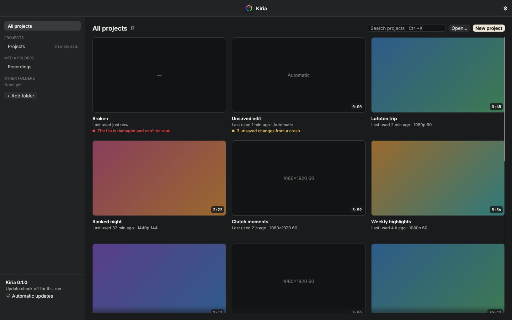
The launcher shows your projects as cards, the most recently used first. Each card has a picture from the project, its length, size, frame rate and when you last used it. A card also says when something needs your attention: unsaved work after a crash, files that can't be found, a project saved by a newer version, or a damaged file.
- Open a project: double-click its card, or click it and press Enter. The editor starts and the launcher closes.
- Find a project: type in the search box above the cards (Ctrl+K puts the keyboard there).
- Open… opens a project file from anywhere on your computer and adds it to the list.
- Right-click a card for Open, Rename…, Move to (another of your folders), Show in file manager, Remove from list (the files stay) and Delete project….
Delete project… first lists every file that would go: the project file and the files that belong to it (its autosave journal, backups, picture, timeline layout and saved versions). Move to recycle bin then moves them to the recycle bin (on Linux, the trash), so you can get them back. Your recordings are never touched. A project that is open in the editor can't be renamed, moved or deleted until you close it.
Making a new project#
- Click New project in the launcher.
- Type a Name.
- Leave Timeline settings on Automatic: the first video you import sets the picture size, frame rate and sound rate, and the editor tells you what it chose. Or start from a template: Game clip (1920×1080, 60 fps), High frame rate (2560×1440, 144 fps) or Vertical short (1080×1920, 60 fps).
- Under Save in, pick one of your project folders, or Browse… for any folder. Tick Save new projects here from now on to make it the usual place.
- Click Create. The editor opens on the new project.
If you import several files at once into an Automatic project, the timeline takes the size and frame rate most of the videos share. You can change a timeline's settings at any time: Timeline settings.
Folders#
The left side of the launcher lists All projects and three groups of folders. Click a folder to see only the projects in it.
- Projects: folders where you keep projects. Projects saved in them show up by themselves. On the first start Kiria makes a
Kiria projectsfolder in your Documents. - Media folders: where your recording software saves. The editor watches them while a project is open and lists new recordings under New in your folders, ready to add with one click.
- Other folders: anything else you want at hand. Kiria also looks in all of these when files of a project have moved (relinking).
Click + Add folder and choose the group. Right-click a folder for Save new projects here, Show in file manager and Remove from list (the folder and its files stay where they are).
Updates and betas#
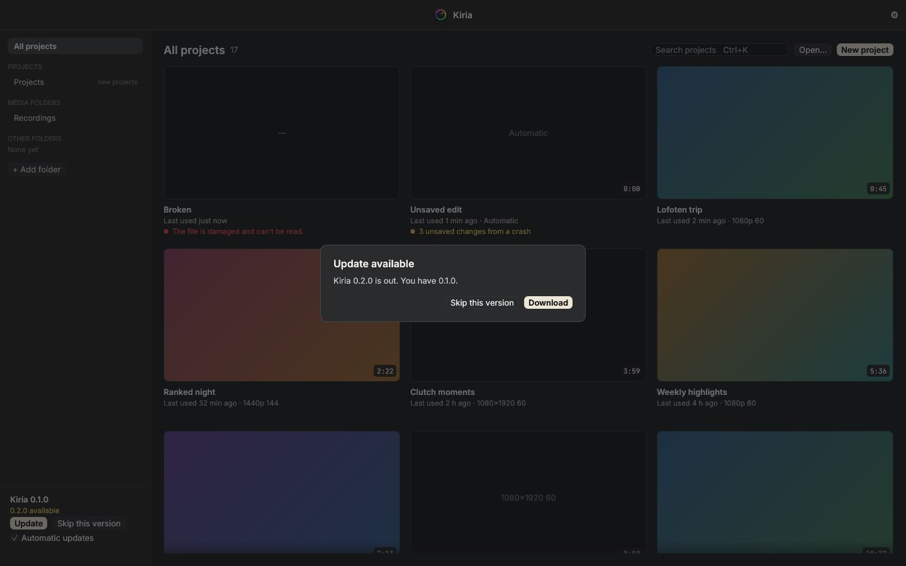
The launcher checks for new versions when it starts (it never waits for the network: being offline doesn't slow it down). The version panel at the bottom left says which version you have and whether a newer one is out.
- When Update available appears, click Download (or Skip this version to never be offered that one). Hide lets the download carry on in the background.
- When it says Update ready, click Restart now, or Later: it installs the next time you start Kiria.
In the launcher's Settings (the cog), the Updates tab has:
- Versions to get: Stable releases, or Betas too. Betas are test versions, published every time something new is finished; they may have rough edges.
- Automatic updates: download new versions as soon as they are out.
Updates are safe to take. Every download is checked against a signature before anything is installed, and a new version is installed beside the old one. If a new version fails to start twice in a row, the launcher goes back to the previous version by itself, never offers the failed one again, and tells you what happened, with Report the problem and Show crash reports.
The editor at a glance#
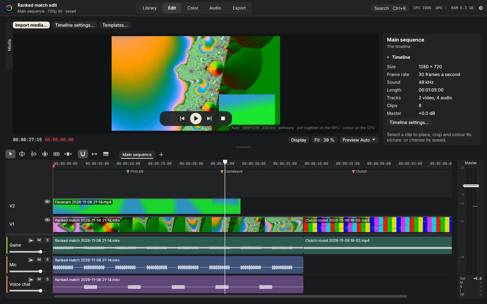
The top bar and pages#
The top bar is the same on every page:
- Left: the project's name, and under it the open timeline, its size and rate, and whether it is saved (“saving soon”, “saving…”, “saved”).
- Middle: the pages: Library, Edit, Color, Audio and Export. They switch at once and share the playhead, the edit needle, the region and the timeline labels, so moving between them feels like moving around one workspace.
- Right: Search (Ctrl+K), what the computer is using (processor, graphics card and memory; click it to open Settings at Resources) and the cog for Settings (Ctrl+,).
The line along the bottom of the window is the status line. It says what just happened (“Undone: removed 2 clips”, “Saved.”) and fades after a few seconds. Problems show as a strip with what happened, why, and a fix, often with a button that does the fix for you.
Search: find anything with Ctrl+K#
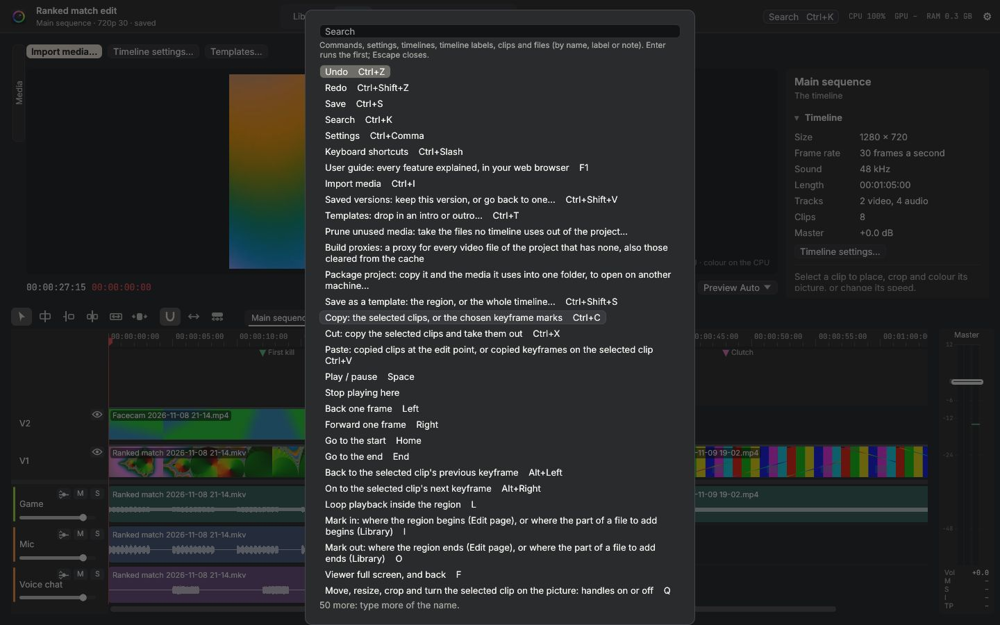
Press Ctrl+K (or click Search in the top bar) and start typing. Search finds:
- Commands, with their keys: type “ripple”, “split”, “proxy” or “help”. It knows the names other editing tools use too, so “razor” finds Split and “compound clip” finds Nest.
- Settings: “proxy” opens Settings scrolled to the Proxies row.
- Timeline labels and clips (jump there), the project's files (by name, label or note; on the Library page it shows the file there, elsewhere it opens the media drawer on it) and other timelines.
- The Library's labels and lists, with how many files each has: a label opens the Library with only its files shown, a list opens its tab. Type “label” or “list” to see them all.
- The keyboard shortcuts page and this user guide.
Enter runs the first result, or click any result. Esc or a click outside closes it.
Opening this guide#
Press F1 in the editor or the launcher, search for “help” or “guide” with Ctrl+K, or open Settings › Help › User guide and click Open. The guide opens in your web browser and works without an internet connection.
Undo and redo#
Every change to a project can be undone: Ctrl+Z undoes, Ctrl+Shift+Z or Ctrl+Y redoes. The status line says what was undone, and if the change was on another timeline, that timeline opens. A slider dragged from one end to the other is one step, not hundreds. While you drag it, every part of the window shows the change as it moves (a track's volume knob in its header moves its column beside the master too, a clip's fade or volume changes its waveform and the mixer), and while playing you hear it as it moves, a clip's change within a few hundredths of a second. How you look at things (track heights, zoom, which timeline is open) is not an edit and makes no undo step.
Library page#
The Library page is where you sort your recordings: label them, put them in lists, write notes, listen and watch, mark the part you want and add it to the timeline.
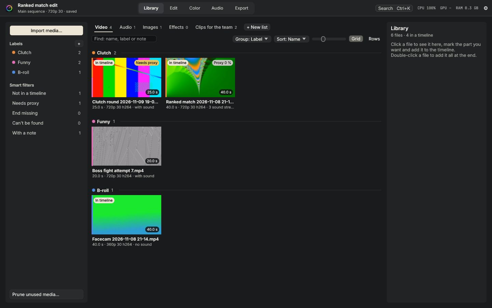
Bringing files in#
Click Import media… at the top left, press Ctrl+I, or drop files on the page. On the Library page files go into the project only, not onto the timeline (importing on the Edit page also puts each file at the end of the timeline).
Every file is checked first. A file Kiria can't use is not added, and you are told why in plain words: an unknown or too new format, no way to decode it, or a damaged file. If a recording's end is missing (the recording software stopped before finishing it), you choose: Import what's there (it is marked “End missing”) or Skip. When you import many files at once, they are summed up in one message.
A recording with several sound streams (game, microphone, voice chat) brings each stream in as its own track, named after the stream when the file names it.
Tabs, grid and rows#
- The tabs across the top are Video, Audio, Images and Effects, then your own lists and + New list. Each tab says how many files it has.
- Under them: Find (words in a file's name, labels or note), the filters that are on (as chips you can remove), Group (by label, by folder, or not at all), Sort, the thumbnail size slider and Grid or Rows.
- Video and pictures show as thumbnails with badges: In timeline, and Needs proxy or how far a proxy is. Each thumbnail shows one picture first, a third of the way in; move the pointer across it to skim through the video (the first skim of a new file may show that one picture for a moment while the rest are read).
- The Audio tab shows sound files as rows with a play button, the waveform in the label's colour, the format and the length.
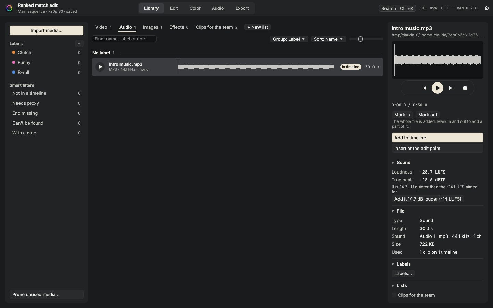
Labels#
Labels are coloured tags for files, such as “Funny”, “Clutch” or “B-roll”. Files are grouped by their first label, with the label's colour along the edge.
- Right-click a file (or several) and open Labels. Tick a label, or choose New label… and type its name.
- Or click + beside Labels in the sidebar to make one.
In the sidebar each label says how many files of the open tab have it. Click a label to show only those files; click more labels to narrow it further (files with all of them); click again to show everything. Right-click a label to rename it, change its colour, remove it, or offer it in every project.
Labels in every project: a label offered “everywhere” shows dimmed in the sidebar of every project. Giving it to a file copies it into that project, so the project never depends on your other projects.
Lists and notes#
- Lists are your own tabs, such as “Clips for the team” or “Best of the week”. Click + New list, or right-click a file › Lists › New list…. A file can be in many lists; a list keeps the order files were put in. Right-click a list's tab to rename or remove it (the files stay in the project).
- Notes: right-click a file › Note, or type in the note box of the panel on the right. Search finds files by their notes too.
Labels, lists and notes belong to the project and every change can be undone.
Smart filters#
Under the labels, smart filters show the files that need you: Not in a timeline, Needs proxy, End missing, Can't be found and With a note. Each says how many files it has; click it to see them.
Choosing several files#
Ctrl-click adds or removes one file, Shift-click takes everything in between, and Ctrl+A chooses every file shown. Then right-click to label them, put them in a list, build their proxies, add them to the timeline one after another, or take them out of the project. Each of these is one undo step.
Watching, marking and adding a file#
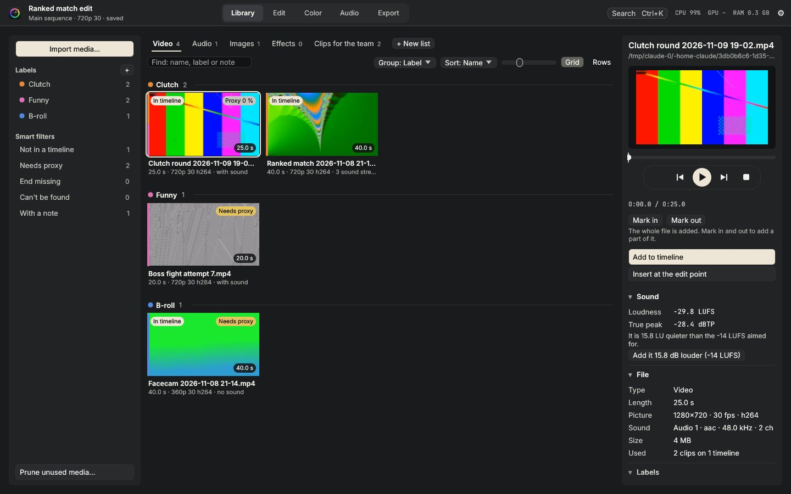
Click a file to show it in the panel on the right, with a small player of its own. While the pointer is over the Library, Space, ←, →, Home and End work this player rather than the timeline.
- Play or scrub to where the part you want begins and press I (or click Mark in).
- Go to where it ends and press O (or Mark out).
- Click Add to timeline, or double-click the file. The marked part goes at the end of the open timeline, as one undo step, with its sound on the tracks the whole file would take. Insert at the edit point puts it at the red edit needle instead, moving what comes after along.
The panel also shows what the file is (format, size, frame rate, sound streams), its labels, lists and note.
Marks are kept for the session. To keep them in the project (so they come back next time), set Settings › Library › Keep in and out marks to save them in the project. The file itself is never changed.
Loudness and levels#
For each sound stream of the file picked, the panel measures its loudness (in LUFS) and its true peak. A button beside each stream offers the level to add it at, so it lands near the loudness you aim for (Settings › Audio) without its peaks going over −1 dBTP. Clicking it changes only how loud the stream goes onto the timeline; the file stays as it is.
New in your folders#
While a project is open, the editor watches your media folders. A new recording shows under New in your folders (in the Library's sidebar and in the Edit page's media drawer) once it has finished being written. Click Add for one, Add all for every one, or × to hide one for this session. Nothing is added by itself.
Prune unused media#
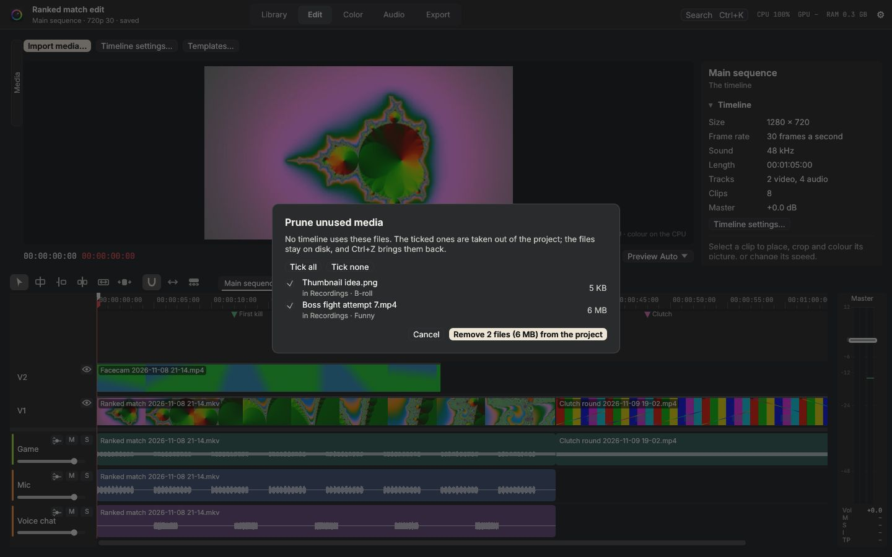
Click Prune unused media… at the bottom of the Library's sidebar (also in the media drawer's ⋯ menu and in search). It lists every file that no timeline uses, each ticked, with its size, folder, labels and note. Untick the ones to keep (or use Tick all and Tick none) and click Remove N files. This is one undo step, and your files on disk are never deleted.
To take out particular files, right-click one in the Library › Remove from project… (or choose several and use the same line in their menu or the panel on the right). Files no timeline uses go at once. If a timeline uses any of them, a warning says how many clips play them and on which timelines: Remove anyway takes those clips off the timelines too, leaving gaps where they were; Remove only the unused leaves the used files and their clips alone; Cancel changes nothing. Either way it is one undo step, and nothing is deleted from disk.
Package a project#
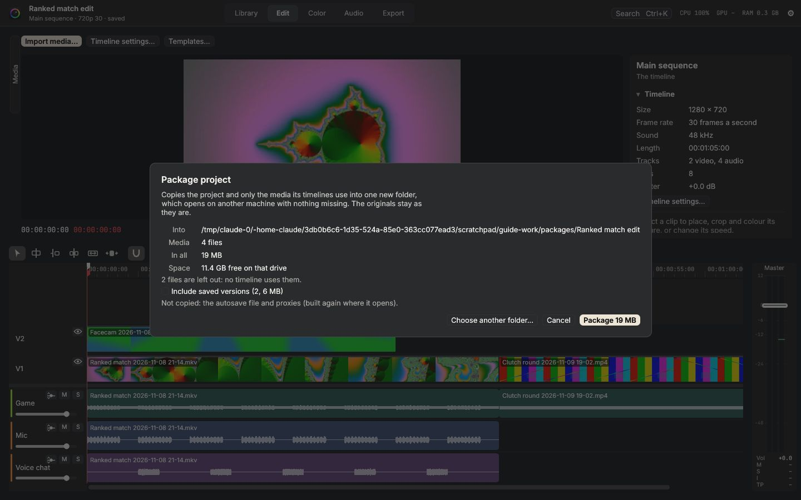
To move a project to another computer or send it to a friend, package it: the project and only the media its timelines use, in one folder that opens wherever it is moved.
- Search for “package” (Ctrl+K), or open the media drawer's ⋯ menu › Package project….
- Pick a folder. A new folder named after the project will be made in it.
- Check what goes in: the number of files, the size in all and the free space on that drive. Tick Include saved versions if you want them too.
- Click Package (the button says the size). Copying runs in the background with progress and the time left; Cancel leaves nothing behind.
The package has a clean save of the project and a Media folder. It doesn't include the autosave journal, backups, templates or proxies.
Missing files and relinking#
If you move or rename recordings, a project can't find them. When it opens, Kiria looks for them by itself, by their contents rather than their names, in the project's folder and in your launcher folders. What it finds is relinked as one undo step, and the status line names the files.
Files still missing are marked on the timeline and listed in a banner on the Edit page. Click Find them… and pick a folder: Kiria looks through it and relinks every file it recognises, even renamed ones. The launcher's cards also say how many files a project is missing.
Edit page#
The Edit page is where you cut: the viewer at the top, the inspector on the right for the selected clip, and the timeline across the whole width at the bottom.
Finding your way around#
- Above the viewer: Import media…, Timeline settings… and Templates….
- The Media tab on the left edge opens the media drawer.
- The viewer shows the timeline's picture at the playhead, with the transport floating over it. Under it: the playhead's timecode (white) and the edit needle's (red), the Display menu, the zoom menu and Preview quality.
- The inspector on the right shows the selected clip's settings, or the timeline's details when nothing is selected.
- The handle between the viewer and the timeline shares the height between them: drag it, or double-click it for the usual split.
- The timeline: the tools on the left of its top row, the timeline tabs beside them, the ruler, the labels row, the video tracks above the audio tracks, and the master column on the right.
Importing on the Edit page#
Press Ctrl+I, click Import media…, or drop files on the window. Each file is checked (see Bringing files in), added to the project and placed at the end of the open timeline. A recording with several sound streams gets one audio track per stream, named after the stream (“Game”, “Mic”, “Voice chat”) when the file names them; other tracks are named V1, V2, A1, A2 and so on.
While a file's waveform and clip pictures are being read, its clips say so with a small progress bar, and the track's name says “Reading 43 %”. You can keep working meanwhile. Waveforms are kept by recording, so a file you have used before shows its waveform at once.
How sound looks in clips. A sound clip is a charcoal panel with its sound drawn in the track's colour across its whole height, as a fine line for every pixel from the lowest to the highest sample under it, so it is uneven above and below, like the recording itself. Its name sits on a small dark label at the top. Sound louder than full scale is drawn in red with a bright mark at the edge. Four settings in Settings › Editing change it, on the timeline and in the Library alike:
- Waveform shape: Plain wave (the usual, described above), Smooth peaks (each hit a rounded spike instead of a jagged saw), Rounded bars (separate bars with round ends, calm when zoomed out) or Blocks (square blocks on a small grid).
- Waveform colours: Track colour (the usual: the track's colour on charcoal), Muted on grey (a quieter version of the track's colour on a grey clip) or Loudness map (the colour shows how loud each moment is: teal for quiet, green for the usual, amber and orange for loud, red when it clips; the track's colour is a thin bar at the clip's left edge), so the loud stretches of a whole track show at a glance.
- Waveform side: Centred (the usual, around a middle line) or One side (only the upper side, standing on the clip's floor: twice the room, so quiet sound and short tracks still show it).
- Waveforms fitted to each recording (on at first): the recording's loudest moment reaches the clip's edge, so a quiet recording is still easy to see. Off, full scale does, so tracks can be compared by eye. Either way only the drawing changes, never the sound, and turning a clip or track up or down still makes its waveform taller or shorter.
Playing and moving the playhead#
| To | Do this |
|---|---|
| Play or pause | Space, or the round button in the transport. Pausing leaves the playhead where playback got to. |
| Stop and go back | Ctrl+Space, or the square button left of play. The playhead goes back to where playback started, so you can watch a moment again and again. |
| Step one frame | ← and →, or the buttons beside play |
| Go to the start or end | Home and End, or the buttons beside the frame steps |
| Jump to a moment | Click or drag in the ruler, or in the scrub bar under the picture. Alt+click anywhere on the timeline moves the playhead there with any tool. |
| Loop | L, or the round-arrows button at the right end of the transport (lit while on), plays the region over and over |
The transport, from left to right: Mark in, Go to the start, Back one frame, Stop, Play / pause (in the middle), Forward one frame, Go to the end, Loop, Mark out. Point at a button to see its keys. It is the same on every page; in the Library's player the loop button is greyed.
Nothing over the picture: press H (or Display › Nothing over the picture) to see the whole picture uncovered, for checking something the transport would hide. The transport moves to a small row of the same buttons under the picture, between the timecode and Display, and the handles and the note in the corner go away. Press H again to bring them back. It stays as you left it, in every project and on every page with a viewer.
Preview quality (under the picture): Auto lowers the picture's size while playing when frames would come late, and the viewer's corner says so; Full, 1/2 and 1/4 fix it. Export always uses full quality.
Zoom into the picture: Ctrl+wheel over the picture zooms at the pointer, and dragging with the middle button moves around. The zoom menu beside the preview quality says the scale (“Fit · 47 %”) and offers Fit (Shift+Z), 50 %, 100 % (Ctrl+0), 200 %, zoom in (Ctrl+=) and out (Ctrl+-).
The playhead and the red edit needle#
The timeline has two markers. The white playhead is what you see and hear. The red edit needle is where edits happen: splits, pastes, labels and media dropped “at the edit point”. Keeping them apart lets you watch ahead without losing your place. Drag the needle by its red handle in the ruler; its timecode is shown in red beside the playhead's.
The thin strip just under the ruler, the cache bar, shows what is ready. Green stretches play at once: the frames kept in memory around the playhead (they grow ahead of it while you play or wait), clips whose proxy is built, and regions pre-rendered. Amber is being prepared: a proxy being built, or waveforms and clip pictures being read. Grey is waiting its turn. With proxies off, only the frames kept show.
- Edit at the playhead (Display menu, or Settings › Editing) merges the two: edits happen at the playhead and there is no separate needle.
- Clicking the timeline moves the playhead (the usual) or the edit needle. Set to the needle, a click in the ruler puts the needle there, and the playhead is moved by dragging its handle at the top of the ruler.
Zooming, scrolling and track heights#
- Zoom: Ctrl+wheel or a pinch zooms at the pointer (or at the playhead with Zoom to playhead); = and - zoom around the playhead; \ shows the whole timeline (also the ↔ button). Zoomed all the way in, every frame is wide enough to grab.
- Pan: Shift+wheel, a sideways wheel, two fingers on a touchpad, or drag with the middle button. The plain wheel scrolls the tracks under the pointer.
- Track heights: drag the edge of a track's name (double-click it for the usual height). Alt+wheel, or Alt+= and Alt+-, make every track of the area under the pointer taller or shorter; Alt+\ puts them all back.
- Video and audio: each area scrolls on its own. Drag the line between them to share the height.
Heights and the divider's place are kept with the project (in a small .view file beside it), not as edits, so they never fill your undo history.
Tracks#
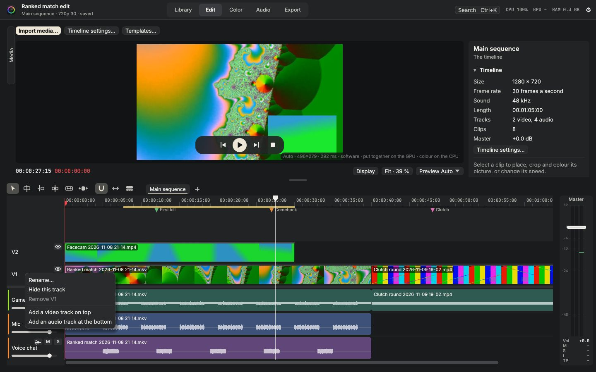
- Add a track: right-click the column of track names › add a video track (it goes on top: V2 covers V1) or an audio track (at the bottom).
- Rename: double-click a track's name and type.
- Hide a video track: click its eye. Its clips are dimmed and left out of the picture.
- Remove a track: right-click it › Remove. Only an empty track can be removed, so removing a track never removes clips, and the last track of each kind stays. Remove the empty tracks clears every track without clips at once (one of each kind, and locked tracks, stay).
- Lock a track: click the padlock in its header (or right-click › Lock). Its row is drawn with thin diagonal lines, and nothing on it can be moved, trimmed, cut, changed or removed until you unlock it; its volume, mute and solo still work.
- Target tab: the small arrow at the left edge of every track's header. The lit one in the video tracks is where a file you place from the media drawer or the Library (insert, overwrite, add at the end) puts its picture; the lit one in the audio tracks is where its sound goes, its other sound streams on the tracks under it. Click another track's tab to make it the target. Until you pick one, it is the first track of each kind. Files you drag onto the timeline still go where you drop them.
- Sync lock: the chain under the target tab. While it is on (as on every track at first), closing a gap, a ripple trim, a change of speed or an insert moves this track's clips too, so it stays in step with the rest. Click it to turn it off (the chain breaks and turns orange): those edits then leave the track where it is unless they happen on it, handy for a music bed that should not move. Cutting the region out of the timeline still cuts every track.
- More in a track's right-click menu: Colour (its clips, and the bar at the left of its header, in one of the label colours), Select every clip on it or its clips after the playhead, Duplicate (a copy with its clips beside it), Move up and Move down, and Insert a track above or below. Each is one undo step.
- Audio tracks have M (mute), S (solo), a volume fader (double-click for 0 dB) and a level button that draws a line across each clip at its volume: drag a clip's line up or down to change that clip's volume. The two are separate on purpose and add up: the fader turns the whole track up or down, the line one clip, and you hear both together (a clip at +3 dB on a track at −6 dB plays at −3 dB). The waveform is drawn as loud as the two together. With Volume knobs on, a knob takes the slider's place: drag around it in a circle (near its middle, up and down), or hold Ctrl and turn the wheel over it (or click it once, then the wheel turns it until you click elsewhere), a decibel a notch; hold Shift for finer steps and double-click for 0 dB. It changes the same track volume as the slider and a pinned column beside Master.
- An audio track's second row of buttons, under M and S when the track is tall enough: the padlock, FX (lit while any of its effects is on; click it to see them on the Audio page) and a small pan knob (drag left or right, Shift for finer, double-click to centre). The thin strip at the header's right edge is its meter while playing. Ctrl-click S to hear that track alone (every other solo goes off). Its right-click menu also has Solo only this track, Reset volume and pan, and Copy its effects and Paste effects, to give another track the same EQ, compressor, clean-up and the rest (its role, pan and lines stay its own).
- Record a voice-over: put the playhead where it should start and press Shift+R (or right-click an audio track › Record a voice-over here). The microphone opens and a banner at the top counts in (3 seconds at first) while showing the microphone's level, then the timeline plays from the playhead while you talk and the banner shows the track and the time. Shift+R again, play/pause, Stop on the banner or the end of the timeline stops it, and the take lands at the playhead where you started; nothing else is moved or cut. Ctrl+Z takes it away in one step. It goes on the track asked for, else the audio target track, else a track called Voice-over (made the first time); when that track already has something there (an earlier take), the take goes on the first free track under it, or on a new track of the same name, so every take over the same stretch is kept and you choose by muting or removing the others. The track you record on and the earlier takes under it are muted while you record, so they aren't heard over the new one; use headphones so the timeline's sound doesn't get into the microphone. Takes are WAV files in a folder beside the project, "project voice-overs", numbered Voice-over 1, 2, 3 …; they stay in the Library like any recording. Choose the microphone and which of its channels to use in Settings › Audio.
- Pin tracks beside the master: right-click an audio track › Pin beside the master gives it a tall meter and fader of its own left of the Master column, and you can pin as many as fit beside the timeline. Drag a column's fader for fine changes (Shift: finer), double-click for 0 dB; under it are its volume, its loudness over 3 seconds, and M and S. The × at a column's top unpins it. Which tracks are pinned is kept with the project's layout, not as an edit; with none pinned, the Master column is alone. To give every audio track a column without pinning each, turn on Settings › Audio › A column for every audio track; then the × on one takes it off, and Pin brings it back.
- Waveforms show the sound as loud as the clip and its track are set. The faint line near the top and bottom of an audio clip is full scale: when a volume makes the sound louder than that, the part past it is drawn in red, up to a red edge at +6 dB over, so you can see clipping while you drag a level line or a fader.
Clips: selecting, moving, placing#
- Select: click a clip. Shift-click or Ctrl-click adds more; Ctrl+A selects every clip of the open timeline; Esc selects nothing. A clip's linked sound is selected with its picture.
- Unlink: right-click a linked clip › Unlink (with the other selected clips when it is one of them). Its picture and each of its sound streams, game and mic too, are then clicked, moved and trimmed on their own. To join clips again, select them and right-click › Link the selected clips. Both are one undo step. To keep every clip on its own in every project, turn on Settings › Editing › Always unlink audio and video: what is linked is unlinked at once (one undo step), and imports and pastes come in unlinked.
- Move: drag it along its track. Dragging one of several selected clips moves them all.
- Another track: drag it up or down; its sound moves with it and finds a free audio track if it needs one. Drag it past the top video track (or under the bottom audio track) and a lit “New track” strip shows where a new track will be made for it.
- A move that isn't allowed (it would land on another clip) is drawn in the warning colour before you let go, and nothing changes.
From the media drawer: drag a file onto a track. Its picture goes on the video track under the pointer and replaces what it covers there; its sound takes audio tracks with room, so nothing else is cut. Hold Ctrl while dropping to insert instead: everything after it moves later on every track. Dragging a timeline tab onto the timeline places that timeline as one clip.
Tools#
The tool buttons sit at the left of the timeline's top row. A tool works the same in every view of the timeline.
| Tool | Key | What a drag or click does |
|---|---|---|
| Select | V | Pick clips, move them, and trim an edge by dragging it (a trim leaves a gap or uses one). |
| Blade | B | Cut a clip where you click. |
| Ripple | R | Trim an edge and move everything after it along, on every track, so no gap opens and nothing overlaps. |
| Roll | T | Move the cut between two clips: one gets longer as the other gets shorter. Nothing else moves. |
| Slip | Y | Show another part of the clip's file without moving the clip. The viewer shows the clip's first frame and its pictures, waveform and keyframes slide as you drag; it stops at the ends of the file. |
| Slide | U | Move a clip between its neighbours: the clip before gets longer or shorter to make room, and the one after the other way. |
| Text | W | Click the timeline where a title should go: a lower-third title is added there, on the video track you clicked (or the first free one above it), selected, with its words ready to type in the inspector. A click on a clip selects it, so you can pick a title to change its words. |
| Snapping | N | On or off. Edges snap to the start, the playhead, the edit needle, timeline labels and other clips' edges. Holding Alt while dragging skips snapping once. |
| Lines | A | Draw volume and pan lines instead of working clips. While it is on, “Lines on ×” shows in the tool row; Esc leaves it. |
The two buttons after snapping show the whole timeline (\) and switch the rough cut view (Ctrl+Shift+T).
Split, delete and gaps#
- Split (S) cuts the selected clip, with its linked sound, at the edit needle; with nothing selected it cuts every track there. If nothing is under the needle, the message offers Split at the playhead instead. A clip's right-click menu also has Split this clip here and Split every track here.
- Delete (Delete) removes the selected clips and leaves a gap.
- Delete and close the gap (Backspace, also called a ripple delete) removes them and moves everything after back on every track, so sound stays in sync. If a clip on another track is in the way, nothing is cut and the message says why.
- Close a gap: click the empty space between two clips to select the gap, then press Delete or Backspace, or right-click › Close the gap.
The region: marking a stretch#
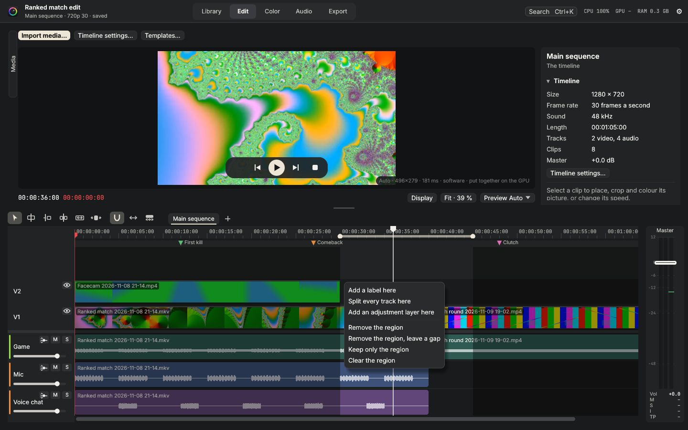
The region marks a stretch of the timeline: to loop, to export, to save as a template, to learn noise from, or to cut.
- Mark it: Shift-drag in the ruler. Or press I where it should start and O where it should end (at the playhead). Right-click a clip › Set the region to this clip.
- Change it: drag its round handles.
- Loop it: L.
- Cut with it (right-click the region, in the ruler or on the tracks): Remove the region cuts it out of every track and closes the gap; Remove the region, leave a gap cuts it out and leaves the space; Keep only the region removes everything before and after it. Each is one undo step.
- Pre-render it: right-click › Pre-render the region (or search for “render”). Kiria puts every frame of it together ahead of time and keeps the frames, so a stretch with many layers, effects or a heavy recording plays smoothly. The status line counts the frames as it goes, and the cache bar under the ruler turns green as they are kept. Frames kept already are not done again, and a clip moved along the timeline keeps its frames; a change to what a frame shows (a colour, an effect, a title's words) makes it be put together as it plays until you pre-render again. Asking again, or for another region, stops the one under way and keeps what it did. Pre-rendered frames are for watching only: an export always puts the picture together from the recordings.
- Clear it: right-click › Clear the region.
- Label it: Shift+M, or right-click › Label the region. An orange band in the Labels row covers the whole stretch and asks for a name. It stays with the timeline after the region moves on, moves along with ripple edits and grows or shrinks with them, and can be dragged like any label. Right-click it › Set the region to it to mark that stretch again, and the Export page offers it as a range of its own.
Fades#
Any clip can fade in at its start and out at its end: a picture fades from and to see-through (black, or what is on the tracks below), and sound from and to silence.
- Make a fade: point at a clip (or select it) with the Select or Ripple tool. A small white square sits in each of its top corners. Drag the left one to the right for a fade in, the right one to the left for a fade out. The fade is drawn as a line from the bottom corner to the top, with what it fades away darkened.
- Change its shape: a fade wide enough has a round point halfway along its line. Drag it up and the fade comes in sooner (fast at first, then gently); drag it down and it comes in later (gently at first, then fast). Double-click the point for a plain fade again.
- Pictures fade on a straight line and sound on a gentle curve that keeps the loudness even; the shape you drag bends either. Fades land on whole frames, a fade in and a fade out together are never longer than the clip, and each drag is one undo step.
- On an audio track the handles change that sound clip's fades only (game and mic each their own); a picture's fades are on its video clip. The inspector's Audio section sets the length of a picture's linked sound fades together.
- Splitting a clip keeps its fade in on the left half and its fade out on the right; trimming a clip shorter than its fades shortens them.
Copy, cut and paste#
- Ctrl+C copies the selected clips with their linked clips. (If keyframe marks are chosen on the selected clip, it copies those instead: see Keyframes.)
- Ctrl+X copies them and takes them out, leaving the gap. Turn on Settings › Editing › Cut closes the gap to close it instead.
- Ctrl+V pastes at the edit needle, on tracks of the same kind and number (missing ones are made), replacing what the clips land on. Nothing else moves. You can paste into another timeline too.
Timeline labels (markers)#
Press M to put a label at the edit needle, or right-click the timeline › Add a label here. Labels sit in the Labels row under the ruler. Click one to choose it and go there; drag it to move it along the timeline; double-click it to name it. Right-click a label to rename it, give it another colour or delete it, and press Delete to remove the chosen label. Each change is one undo step, and labels work the same on every page that shows the timeline. Search (Ctrl+K) finds labels by name.
Several timelines and nested timelines#
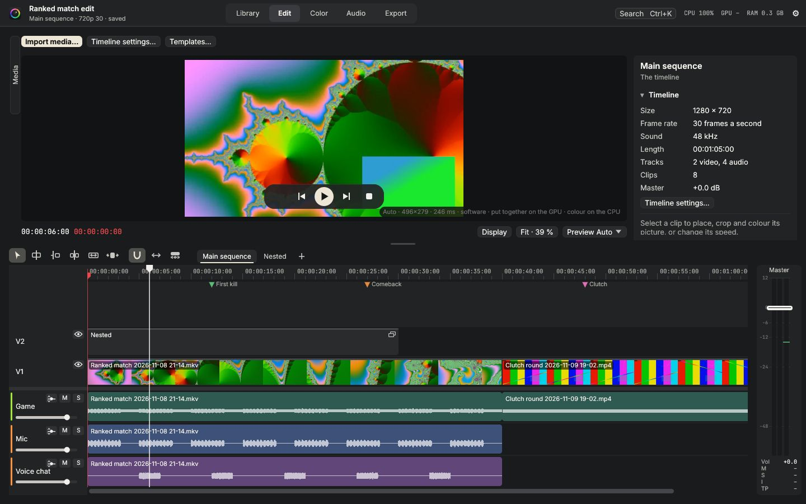
A project can have as many timelines as you like, for example a long cut, a short and a highlight reel. Each has a tab above the timeline, beside the tools.
- Open one: click its tab. Which one is open is not an edit and isn't undone.
- New: click + (the same size and rate as the open one). Its name is ready to type.
- Rename: double-click its tab.
- Right-click a tab to Duplicate it, open its Settings…, place it in the open timeline, or Remove it. The last timeline, and one that another timeline plays, can't be removed; the menu says why.
Nested timelines: select some clips and choose Nest the selected clips (right-click on the timeline): they move into a new timeline of their own and one clip playing that timeline takes their place. You can also drag a tab onto the timeline. A nested clip works like any clip: trim it, move it, change its speed, place and colour it. Double-click it (or right-click › Open its timeline) to edit what's inside; changes show everywhere it is used.
A nested clip never changes length by itself. If its timeline gets shorter, the part past the end is hatched on the clip; right-click › Fit to the nested timeline trims it. A timeline can never end up inside itself: that is refused with the reason.
Adjustment layers#
An adjustment layer is a clip with no picture of its own: its colour settings change everything below it on the timeline while it lasts. Right-click a video track › Add an adjustment layer here, or use the command from search (it is added at the playhead). It is five seconds long and goes on the first free video track from there up, or on a new track on top. Trim, move and split it like any clip. Its settings are in the inspector: Opacity and Quick color, with keyframes. Colour grading tools come with the Color page.
Templates: intros and outros#
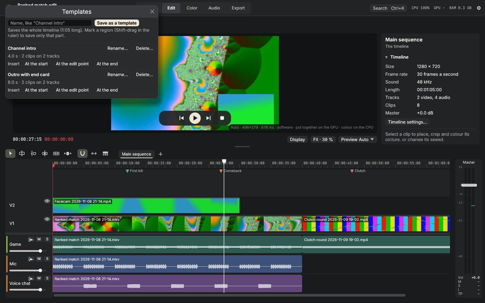
- Mark the intro with the region (or leave it unmarked to use the whole timeline).
- Press Ctrl+Shift+S (Save as a template) and give it a name.
- In any project, press Ctrl+T (or click Templates…), pick the template and drop it in At the start (as an intro: everything moves later to make room), At the edit point or At the end (as an outro).
Dropping one in is one undo step. It makes any tracks it needs and reuses media the project already has. Templates belong to you, not to a project: they are kept in the app's data folder and offered in every project. Rename and delete them in the same window; projects they were dropped into don't change.
The inspector#
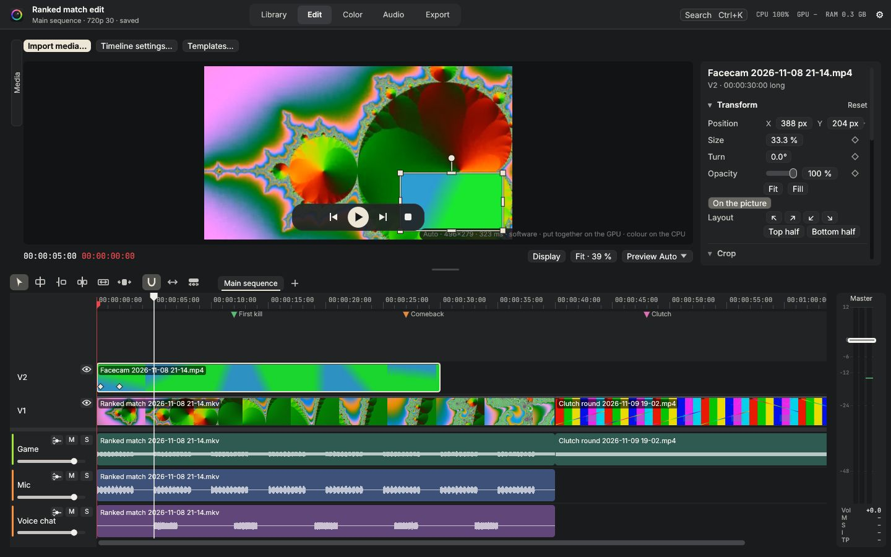
Select a clip and the inspector shows its settings in sections. Each section's header says in one line what is set and has a Reset; click the header to fold it away. Drag a number to change it (you see the change in the viewer at once) or type one. Letting go is one undo step.
- Transform: position (in pixels of the frame), size (in percent of fitted), turn and opacity; Fit and Fill; and one-click layouts for a facecam: small in any corner, or filling the top or bottom half of the frame (for a vertical video with the game above and your face below).
- Blend (in Transform, under Opacity): how the picture mixes with what is below it, for overlays on a higher track. Add and Screen brighten (light leaks, flares, fire on black), Multiply darkens and makes white disappear (shadows, paper textures), Lighten keeps the lighter of the two.
- Crop: each side. Crop to › Black bars finds the black along the picture's edges and cuts it away in one click, the picture left as large as fits: a game drawn at 2560×1440 on a 3440×1440 screen comes out as its 2560×1440 picture (also in a picture clip's right-click menu: Crop away black bars). The other Crop to buttons (16:9, 21:9, 4:3, 1:1, 9:16) cut the picture to that shape, the same off both sides. When what is left has another shape than the timeline, Timeline › Make it 2560×1440 (or whatever size is left) changes the timeline to it, so the export has no bars either. Each is one undo step.
- Quick color: exposure, contrast, saturation, temperature and tint.
- Effects: the picture's effects, applied from the top down after Quick color. Add effect puts one at the end (Vignette: darker towards the edges; Film grain: fine noise that changes every frame, strongest in the middle tones; Sharpen: crisper detail; Glow: bright parts spill soft light around them, above a threshold you set; Blur and Pixelate: over the whole picture, or untick Whole picture to cover just a box, set by its left, top, width and height, to hide a name or the chat; Zoom to a point: moves in on a point of the picture over the clip's length (Keep it sharp sharpens it as it goes in, so a close zoom stays crisp); Motion blur: smears the picture the way it moves, as a camera's shutter does, following its position, size and turn keyframes and the motion effects above it in the list (Shutter: 180° is a usual film look, 360° all of a frame); Shake: a smooth camera shake; Smooth pan: the view slides from one part of the picture to another; Stabilise: steadies a shaky camera once you click Analyse the clip (it finds how the camera moves over the whole clip, smooths that by its Smoothing, and zooms in just enough to hide the edges; Escape stops it; analyse again after changing Smoothing); Mirror: flips the picture left for right, upside down, or both; Rounded corners: rounds the corners off, up to fully round ends, so a square facecam becomes a circle (what is below shows through the corners); Outline: a line of colour round the picture's edge, outside it, following rounded corners; Drop shadow: a soft shadow behind the picture, with its darkness, softness, distance, direction and colour; Letterbox: black bars that give the picture another Shape (2.39 : 1, the wide cinema shape, at first; above and below for a wider shape, at the sides for a narrower one); Chroma key: takes a green or blue screen away so what is below shows through. Pick the Screen colour (Green screen, Blue screen or any colour), then raise Tolerance until the screen and its shadows are gone, Softness for a gentler edge, and Spill removal to take the green glow off hair and edges; Black and white, Sepia and Invert, each with an Amount to mix it in; Duotone: the picture's brightness in two colours, its Shadows and its Highlights; Chromatic aberration: red and blue drawn apart (an RGB split), by an Amount in a Direction; Directional blur: smeared one way, by an Amount in a Direction; Radial blur: smeared towards a point, as when zooming in fast; Glitch: bands of the picture torn sideways with their colours apart, as a broken signal, with its Amount and How often (the same frame always glitches the same way); Lens distortion: bent as through a lens, its Bend from pinched in (−100 %) to a fisheye (100 %), the corners kept where they are; Mosaic: the picture repeated in a grid, one to eight Across; Kaleidoscope: mirrored round its middle in two to sixteen Wedges, with a Turn; Posterise: few Shades of each colour in flat bands, as a printed poster; Halftone: dots of the picture's colours on black, bigger where it is brighter, with a Dot size; Scanlines: dark lines across it, as an old CRT screen, with their Darkness and Spacing. Under Light and action: Light leak: warm light drifting in from the edges, as light leaking into a film camera, with its Amount, Drift and Colour; Lens flare: a bright light with a streak and rings, placed with Across and Down; Speed lines: white streaks rushing in towards a point, new every frame; Impact frame: the picture in stark black and white (Inverted swaps them), meant for a frame or two on a hit: split the clip around it or keyframe the effect on and off. Outline and drop shadow draw past the picture's edges, so put them after Rounded corners. The three motion effects move the picture inside the clip's own frame and ease in and out). A colour is picked from a few swatches or the button beside them; a tick or a colour changes at once, as one undo step. Each effect has a tick to switch it off without losing its settings, arrows to apply it sooner or later, and ✕ to take it away; each is one undo step. Sound clips and adjustment layers have no effects yet.
- Speed: see Speed and slow motion.
- Audio: volume (−60 dB is silent, up to +12 dB), pan (equal power) and fades in and out, on whole frames. A selected picture's Audio sets all the sound linked to it (game and mic together). Fades are drawn on the clip in the timeline, where they can also be dragged (see Fades).
With several clips selected, the inspector shows the one on the highest track and says so. A number you change in Transform, Crop or Quick color changes on every selected picture too, to the same value, while each keeps the numbers you didn't touch: make three facecam clips the same size at once, or warm up a whole scene. Audio works the same way: a volume, pan or fade set there goes to the sound of every selected clip, and so does a speed set in Speed (with Pitch). Each is one undo step. With nothing selected it shows the timeline's details, with Timeline settings….
Moving and cropping on the picture#
Press Q (or tick On the picture in Transform) to put handles on the selected clip's picture in the viewer:
- Drag inside to move it. It snaps its centre to the frame's centre lines and its sides to the frame's edges.
- Drag a corner to resize it; the opposite corner stays put.
- Drag the bar on a side to crop that side. The whole picture shows faintly while you drag.
- Drag the round handle above it to turn it. It lands on upright and quarter turns when near; Shift turns in steps of 15°.
- Double-click it to fit it.
Hold Alt (or switch snapping off) to place freely. The inspector's numbers follow as you drag.
Keyframes: changes over time#
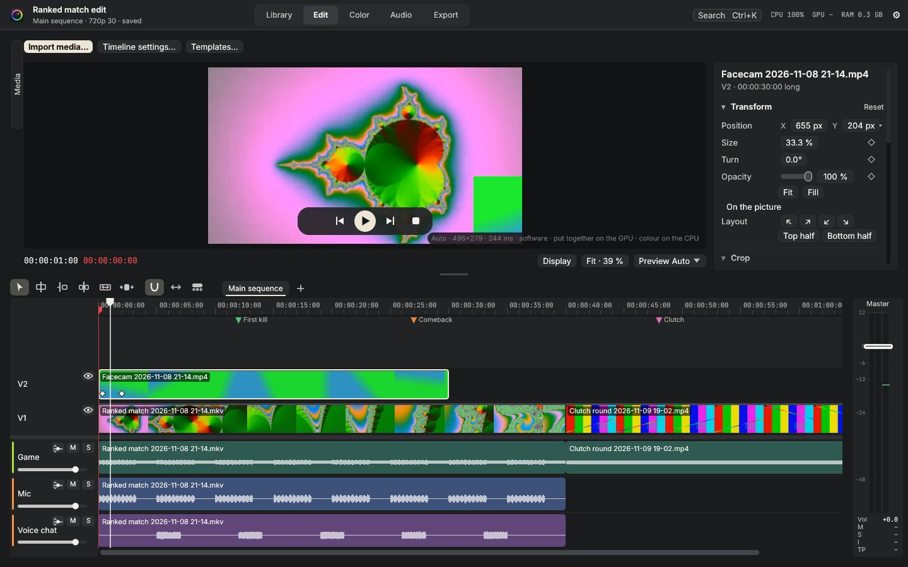
Every number in Transform, Crop and Quick color can change over time. The diamond at the end of a number's row tells you how it is: hollow when the number doesn't change over time, filled when there is a keyframe at the playhead, and hollow with a dot between keyframes.
A number that changes over time has its curve drawn under its row: how it goes over the whole clip, a dot at each keyframe, and a line where the playhead is. You see at a glance where it rises and where it holds, and how each ease bends it. Click or drag along the curve to move the playhead there.
- Move the playhead to where the change should start and click the diamond: the first keyframe.
- Move the playhead on and change the number: a second keyframe is made there by itself.
- Play: the value goes from one to the other.
- Click a filled diamond to remove that keyframe. Right-click it to choose how the value goes on to the next: linear, hold or smooth. The arrows beside it go to the previous and next keyframe.
- The selected clip shows its keyframes as small diamonds along its bottom edge. Click one to go there; Alt+← and Alt+→ step between them. Drag one to move it a frame at a time.
- Choose several with Shift or Ctrl-click, or drag a box along the clip's bottom edge. Right-click for Go here, Remove these keyframes or how they go on.
- Copy and paste keyframes: choose marks, press Ctrl+C, select a clip (the same or another, in any timeline), put the playhead where they should start and press Ctrl+V.
- A section's Reset also removes its keyframes.
Keyframes stay on the same moment of the recording when you move, trim or speed up the clip.
Speed, slow motion and speed ramps#
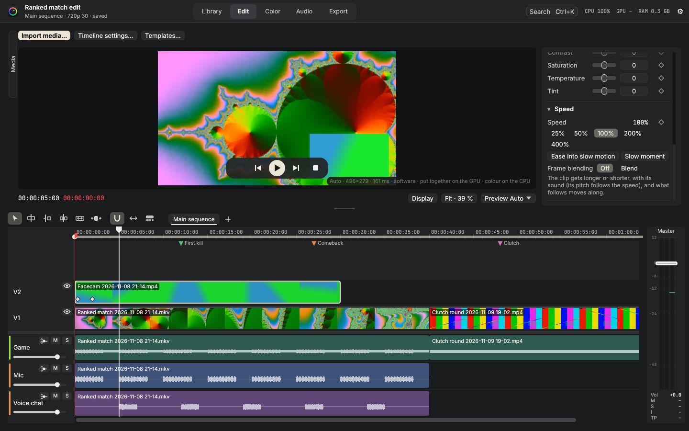
- One speed: the buttons set the whole clip from 25 % to 400 % (also in the clip's right-click menu › Speed). Picture and sound follow. The sound's pitch follows the speed like tape, unless Pitch › Keep is chosen: then voices and music sound as they were recorded at any speed (with a speed ramp the pitch still follows the speed).
- Clean slow motion: for a recording with more frames per second than the timeline (120 or 144 fps on a 60 fps timeline), an extra button offers the speed that shows every recorded frame once (50 % for 120 fps, 42 % for 144 fps). It is perfectly smooth.
- Speed ramps: put the playhead where the slow motion should start and click Ease into slow motion (smoothly down over half a second and staying slow) or Slow moment (down, a second slow, and back up). Or click the Speed row's diamond to add speed keyframes yourself, as with any number. Speed keyframes show as marks along the selected clip's bottom edge with the look's: drag one to move where the speed changes, or right-click it to remove it or choose how it eases; the clip gets longer or shorter to play the same part of its file. Remove ramp goes back to one speed.
- Frame blending: Blend mixes neighbouring recorded frames for slowed clips whose frames would otherwise repeat; Off shows each frame as it was recorded.
A ramped clip shows its speed as a thin line along it and “Ramp 100→25→100%” beside its name. The clip keeps the part of the recording it plays, so its length changes and what comes after moves along.
The media drawer#
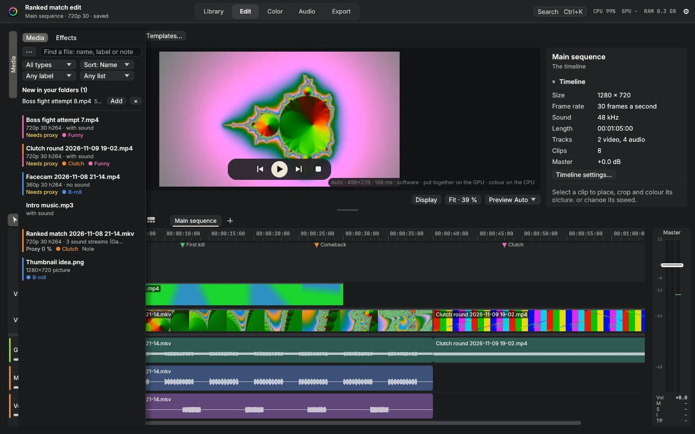
Click the Media tab on the left edge. The drawer floats over the page; a click elsewhere closes it, and it steps aside while you drag a file over the timeline.
- Find a file matches words in names, labels and notes. Under it, narrow by type, order, label and list.
- Double-click a file, or click +, to place it at the end of the timeline. Drag it onto the timeline to lay it on a track (Ctrl inserts).
- Right-click a file for Insert or Overwrite at the edit point, its labels, lists and note, and Build proxy now or Delete proxy.
- The ⋯ menu has Prune unused media… and Package project….
Effects (the switch at the drawer's top) lists the titles, the transitions, the sound crossfades and every picture effect under Motion, Frame, Keying, Colour, Light and action, Blur and censor and Stylise, with the ones you used last under Recently used, and a box to find one by its words ("censor", "zoom", "facecam"). Each has a small picture of what it does. Click a group's heading to fold it away; the two buttons by the find box show them as rows or as tiles, two to a row.
- Drag an effect onto a clip on the timeline: the clip it would go onto is outlined, and letting go adds the effect to it.
- With a clip selected, rest the pointer on an effect to see it on the picture before adding it; double-click it, or click its +, to add it.
- Each added effect is one undo step, and is tuned in the inspector's Effects section.
- Titles (Lower third: a name low on the left on a dark band, the lines under it smaller; Centred title; End card: words on a dark card filling the picture) are clips of their own. Drag one onto the timeline, or double-click it to add it at the playhead: it lasts four seconds and goes on the first video track free there, above the picture. Type its words in the inspector's Title section (a new line starts a new line); the viewer shows them as you type, and leaving the field makes it one undo step. Change the layout, the letters' size and colour, and the band behind them there too. Move, trim, fade and key a title like any clip: Transform, Opacity, Quick color and effects all apply.
- Transitions (Cross dissolve, Dip to black, Wipe, Push, Zoom through, Slide in, Spin, Whip pan (a fast push smeared by its speed), Luma fade (the next shot comes in where it is brightest first) and Glitch (both shots break up, the cut hidden in the middle)) go on a cut between two clips that touch on the same track. Drag one over the timeline: the cut it would go onto is lit (the nearer end of the clip under the pointer), and letting go puts it there. Or select the second clip and double-click the transition. It plays half before the cut and half after, half a second at first; the timeline draws it as a small box across the cut. Change its kind and length, or take it away, in the inspector's Transition in section on the second clip. Nothing is trimmed for it: where a recording has nothing past a clip's edge, its first or last frame is held. Each change is one undo step.
- Sound crossfades (Crossfade: as loud throughout, for two different sounds; Straight crossfade: for two takes of the same sound; Smooth crossfade: gentle at both ends; Dip to silence: out to silence by the cut, then in from it) go on a cut between two sound clips the same way, dragged onto an audio track's cut or double-clicked with the second sound clip (or its picture) selected. A clip with several sound streams gets the crossfade on each of them, in one undo step. Each sound plays past its edge while the other fades, so nothing is trimmed; before a recording's start there is just silence. Change its shape and length in the inspector's Crossfade in section on the second sound clip.
- Every effect setting can change over the clip, like Transform's: click the diamond at the end of its row to put a keyframe at the playhead, move the playhead and change the setting to add another. To make a blur box follow a name or a face across the picture, put the box over it, set the playhead where it should start and click Follow it from here: the box follows what it covers to the end of the clip (the status line says how far it is; Esc stops it and keeps what it found) and gets Left and Top keyframes, one undo step. If it loses what it covers (a cut, something passing in front), it stops there; follow again from a later moment, or key Left and Top by hand. The timeline's keyframe marks on the clip name the effect.
Sync by sound#
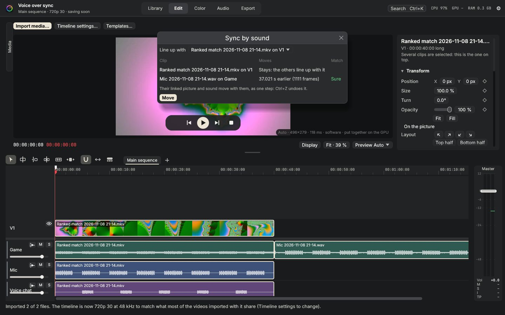
Recorded your mic or a friend's voice separately? Sync by sound lines it up with the game recording by listening to both.
- Put the clips roughly where they belong (within a few minutes) and select them all.
- Right-click one › Sync by sound… (or search for “sync”).
- The window compares each clip with the reference (the clip on the lowest video track; choose another under Line up with) and lists how far each would move, in milliseconds and frames, and how sure it is: Sure, Likely or Unsure — check by ear.
- Click Move to move the sure and likely ones (with their linked clips) as one undo step. Unsure ones only move with Move anyway.
Clips with a picture move by whole frames; sound alone lines up to the sample. If a move would put the start of a clip before the timeline starts, that part is cut off, and the window says so before you move.
Remove silence#
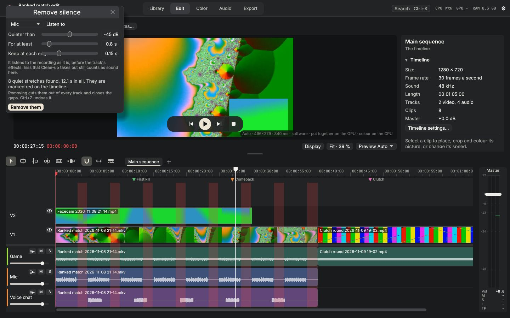
- Press Ctrl+Shift+R.
- Choose the track to Listen to (it starts on the first Dialogue track).
- Set Quieter than (the threshold), For at least (the shortest pause to cut) and Keep at each edge (a little air around the words). The silent stretches are marked red on the timeline as you change them.
- Click Remove them. They are cut out of every track and the gaps closed, as one undo step.
It listens to the recording as it is, before the track's effects, so hiss that Clean-up removes still counts as sound. If the threshold is under the recording's quietest level, it says so and offers a better one (“Use −27 dB”).
Proxies: smooth playback of heavy recordings#
A proxy is a light copy of a recording that is quick to jump around in. Kiria shows the proxy's frame while you scrub or jump, then the exact frame from the original when the playhead rests (the viewer's corner says “proxy frame” meanwhile). Export always uses the originals.
- Settings › Playback & proxies › Proxies: Auto (the usual) builds a proxy only for files that are slow to jump in; On builds one for every video; Off builds none.
- Proxies are built in the background, the newest file first, and wait while the timeline plays. On a processor with many cores a few are built at once, and a long recording is built in several pieces side by side. To build every missing proxy as fast as the machine can, also while you play, search for Build proxies at full speed (the editor may feel slower until they are done). The media drawer and the Library say “Needs proxy”, “Proxy 43 % · 2 min left” or “Proxy”.
- Right-click a file › Build proxy now or Delete proxy. Search for “build proxies” to build every missing one.
- Proxies belong to recordings, not projects: one proxy serves every project that uses the file. They are kept in the app's cache folder within the disk space set in Settings › Cache, the ones used longest ago going first.
To free space, use Settings › Cache: clear this project's proxies or every proxy. Your recordings and project files are never touched. A proxy you cleared on purpose isn't built again by itself, only when you ask.
Save a frame as a picture#
Press Ctrl+Shift+E to save the frame at the playhead as a full-size PNG, for a thumbnail or a post. Choose where to save it; it is written in the background.
Timeline settings#
Click Timeline settings… above the viewer (or right-click a timeline tab › Settings…) to set the open timeline's picture size, frame rate and sound rate. Choose Automatic (set by the first video imported), a template, or the same as one of the project's videos. Clips that don't match are fitted inside the frame, never stretched.
Color page#
The Color page is for each shot's colour: warm up a cold facecam, bring down a blown-out sky, or give every clip of a match the same look.
How the page is laid out#
- The picture, large, with the transport, on the left; on the right, the clip being graded with Apply, Copy grade, Paste and Reset, and under them one scope of the picture as it will be exported: Waveform (brightness up the side, across the picture), RGB parade (the same for red, green and blue side by side), Vectorscope (colour: hue around, saturation outwards) or Histogram, with a line on what is clipped ("Nothing is clipped").
- Under them, one tool at a time: Basic, Wheels, Curves, Range, Mask or Looks. Next to the switcher is the layer dropdown (a grade can have several layers, applied in order; + Add a layer adds one, and On switches one off to compare) and, for the wheels, Simple or Advanced.
- The timeline at the bottom, with the sound folded into the clips. Graded clips have a small dot in their bottom left corner.
The clip being graded is the selected one, or, with nothing selected, the top one under the playhead. ↑ and ↓ go to the clip before and the next one and select it, so you can step through a timeline shot by shot (on the other pages they go to the cut before and after). Before under the clip's name shows the picture without its grade; click it again for after. Split shows both at once: before on the left of a line, after on the right; drag the line across the picture to compare any part. Every change is one undo step; a slider or wheel being dragged shows in the picture at once and becomes one step when you let go.
Basic#
- Temperature and Tint: warmer or cooler, greener or more magenta. Auto beside White balance looks at frames across the clip, finds the colour of the light, and sets them to take it back to neutral; the number beside it is how much of that correction is used. Pick white beside it is the other way: click it, then click something on the picture that should be white or grey (a wall, a shirt, a sheet of paper), and Temperature and Tint change so it is. It is meant for facecams and camera clips: a game clip with colours of its own is mostly left alone (it says when too little is neutral to tell). It never runs by itself.
- Exposure: brighter or darker, in stops (one stop doubles or halves the light). Highlights and Shadows: the brightest and darkest parts alone.
- Contrast around the Pivot (the light level that stays where it is), and Saturation.
Double-click a slider to put it back.
Wheels#
Shadows, Midtones, Highlights and Overall. Drag a wheel's dot towards a colour to push that part of the picture that way; the further out, the stronger. The slider under each makes that part brighter or darker. Double-click a wheel to put its colour back. Advanced draws the wheels larger with their red, green, blue and brightness as numbers you can type.
Curves#
One curve at a time: Master (brightness), Red, Green or Blue, the others faint behind it. Left to right is how bright a part of the picture is, bottom to top how bright it becomes. Click the curve to add a point, drag a point to move it, double-click one to take it away; the two ends move only up and down. A gentle S (the dark part a little down, the bright part a little up) adds contrast; pulling the Blue curve's middle down warms the middle tones. Reset curve straightens the one shown. The curves come after the layer's Basic and Wheels.
Range and Mask: grading one part of the picture#
A layer can be kept to some colours, to a shape, or to both, so it changes a face, a sky or the edges and leaves the rest. Add a layer for it (+ Add a layer), set where it reaches with these two tools, then make the change with Basic, Wheels or Curves on that layer.
- Range: tick Only these colours, then Pick from the picture and click the colour you want (a cheek, the sky), or start from Skin. The sliders say which colours are in: the Hue and how far Either side of it, how much colour (Saturation from and to) and how bright (Lightness from and to), with Softness fading the edges so there is no hard line. Switch the layer off and on (On) to see what it reaches.
- Mask: tick Only in a shape and choose Ellipse or Rectangle. The shape is drawn over the picture (its soft edge dashed); drag on the picture to move it. Across, Down, Width, Height and Turn place it, Feather softens its edge, and Outside it changes everything but the shape: a darker layer outside a soft ellipse is a vignette that brings the eye to the middle.
- Looks: click one (Warm, Cool, Punchy, Teal and orange, Faded film, Crisp, Night, Black and white) to put it on the clip as a layer of its own, on top of its grade, at the Strength set above them. The new layer is chosen, so the other tools change it; switch it off in the layer dropdown to compare. Keep this layer as a look… keeps the layer shown (its colour, not its range or mask) under a name you give, in Your looks, for every project; right-click one of yours to remove it. Looks are kept in your data folder, not in a project, and a clip keeps its colour if the look is removed.
With both, the layer reaches the colours in its range that are also in its shape.
One grade on many clips#
- Apply puts the clip's grade on Every clip, the Clips of this file, or the clips whose file has a label you choose, in one undo step.
- Copy grade, then select clips and Paste.
- Reset takes the clip's grade away.
A grade comes after the clip's Quick color and before its effects, and looks the same in the export as in the viewer.
Audio page#
The Audio page is for the mix: give each track a role, clean up a noisy mic, keep the game under your voice, and land on the right loudness for where the video goes.
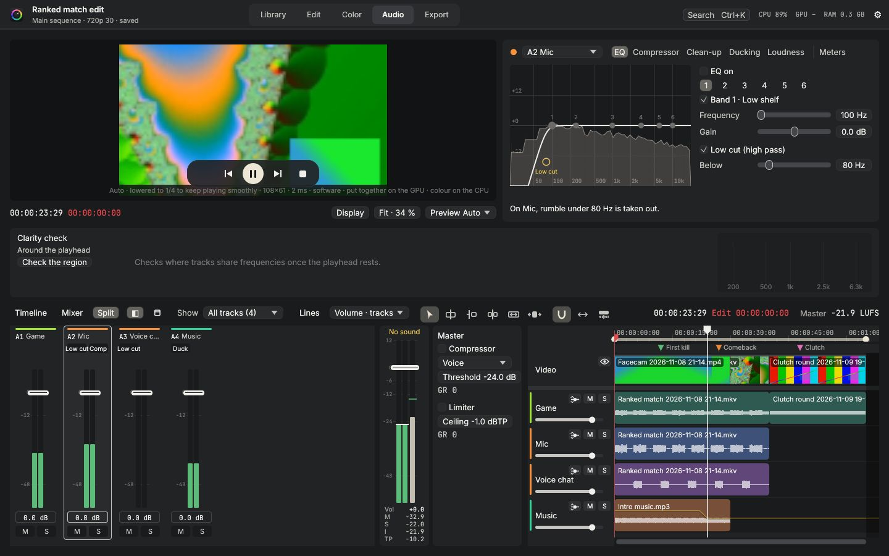
How the page is laid out#
- Top left: the viewer with its transport, the same as on the Edit page.
- Top right: the tools for one track. Pick the track in the dropdown, then a tool: EQ, Compressor, Clean-up, Ducking, Loudness, Distortion, Echo, Reverb, Pitch or Meters (on a second line when the panel is narrow). Each tool says in one plain sentence what it is doing right now.
- Middle: the clarity check, or one of four live pictures of the sound; the column at its left switches.
- Bottom: Timeline, Mixer or Split (both, side by side or stacked), and a Show filter to see only one role's tracks.
The parts can be made taller or shorter: drag the short bar in the gap between two of them, up or down. Make the viewer bigger, give the spectrum or the clarity check more room, or keep the mixer small. In Split stacked, the bar between the timeline and the mixer shares the bottom between them. Each part keeps enough room for its controls (the viewer its transport, the band its column of views, the mixer its faders), and dragging past that moves the next part along. Double-click a bar to put it back where it was at first. The sizes are remembered for every project, as parts of the window's height, so they keep their proportions when the window changes size.
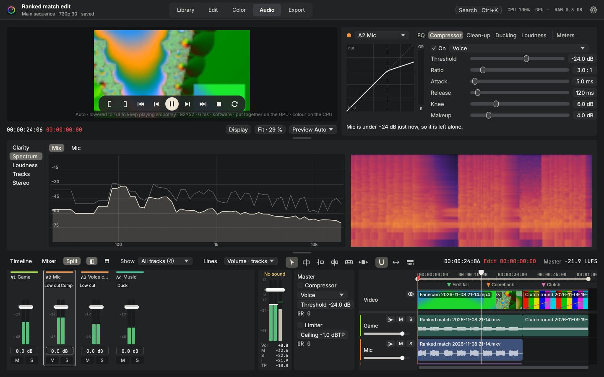
The playhead, edit needle, region, labels, transport and keys are the same as on the Edit page. Every change is one undo step, and you hear a value while you drag it.
Every effect starts off. With everything off, a recording plays exactly as it was recorded.
Track roles#
Right-click a track's name (or its mixer strip) › Role: Dialogue, Music, SFX and foley, Ambience or Other. The role colours the track, filters the views, and tells the tools what is the voice: Ducking listens to Dialogue tracks, and the clarity check protects them. A track made Dialogue also gets a gentle Low cut at 80 Hz, in the same undo step.
EQ and Low cut#
The EQ draws its curve over the track's live sound (play to see it). Six numbered points are its bands.
- Drag a point sideways for its frequency and up or down to raise or lower it.
- Turn the wheel over a point to make it wider or narrower.
- Double-click a point to make it flat again.
- Low cut takes away rumble below a frequency: drag its edge sideways. 80 Hz suits most voices.
The chosen band's numbers are beside the graph to type in.
Compressor#
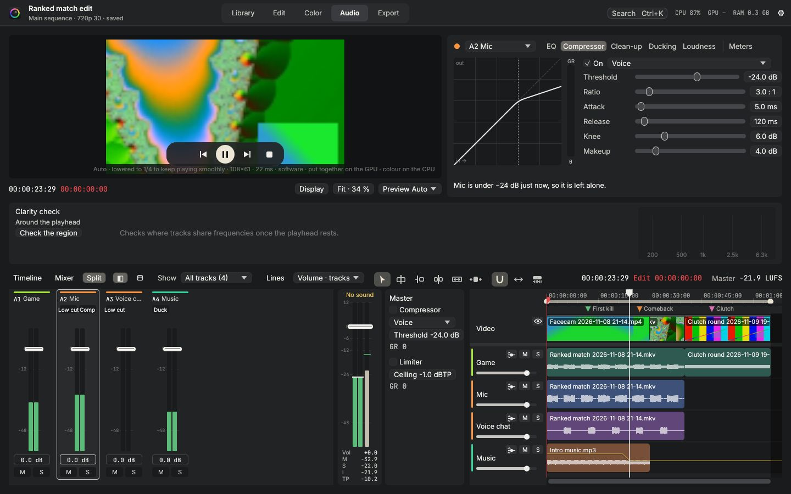
A compressor turns down the loudest moments so a voice stays even. Start from a preset in plain words, then fine-tune Threshold, Ratio, Attack, Release, Knee and Makeup. The curve shows what goes in against what comes out, and the meter how far it is turning down now. Moving any number turns the compressor on.
Clean-up: removing hiss and hum#
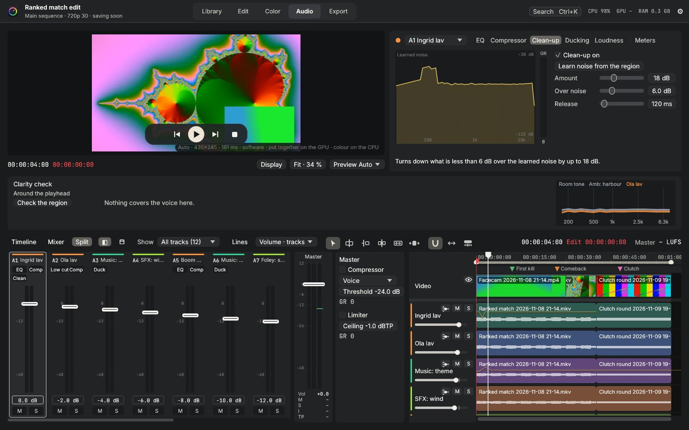
- Find a stretch where only the noise is heard (a pause, before you start talking) and mark it with the region. Or select a clip on this track.
- Click Learn noise from the region (or …from the selected clip). The noise is learned in the background and drawn across the frequencies, and Clean-up turns on.
- Set Amount (how much quieter the noise gets), Over noise (how much louder than the noise a sound must be to pass untouched) and Release. Play and listen.
On one clip only. When a clip of the track is selected, EQ and Clean-up show Whole track and Selected clip at the top. With Selected clip they change that clip alone: one noisy take cleaned, or one quiet one made brighter, without touching the rest of the track. A clip's own EQ and clean-up come first, before its volume and fades and before the track's effects, and stay with the clip when it is moved or split. Learn noise from the selected clip learns that clip's own noise.
Ducking: music and game under your voice#
Ducking turns a track down while someone talks on a Dialogue track, and back up in the pauses. Open it on the game or music track and turn on Duck under dialogue. Set Depth (how far down), Speech over (how loud the voice must be to count), and how fast it goes down, holds and comes back up. A meter shows how far down it is now. It needs at least one track with the Dialogue role.
Loudness: keep a track even#
The Loudness tool keeps a track near one loudness, lifting quiet stretches and lowering loud ones, within Lift up to and Lower up to. Useful for a friend on voice chat who is sometimes close to the mic and sometimes far away. It shows how much it is lifting or lowering now.
Distortion, echo, reverb and pitch#
Four tools change the sound itself, for effect. They come after the Compressor and before the Loudness tool, so the Loudness tool and the meters hear the result.
- Distortion: Drive pushes the sound into a soft clip, warm at a few dB and gritty at many; Radio squeezes it into a small speaker's band first, and Phone into a phone line's, in mono and harder. The picture shows how a level going in comes out. Mix blends it with the sound as it was. Try Phone on a friend's voice for a call in a story.
- Echo: repeats every Time, each Repeats as loud as the last, at its Level; Left and right in turn bounces them across. Changing the time while playing glides, like tape.
- Reverb: puts the track in a room. Room size from a small room to a hall, Damping for how quickly the high sounds die away, Level for how much of the room you hear. The picture shows how long it rings.
- Pitch: plays the track higher or lower without changing its speed, by up to an octave either way (Semitones, with buttons for five semitones and an octave). Lower makes a voice deep, higher makes it small; a little either way disguises it. Mix blends it with the sound as it was. It comes before the Distortion, so a shifted voice can still go down a phone line.
The sound as it came is never turned down by Echo or Reverb: they add to it. Each is one undo step when you let go, and you hear it while you drag. Moving any of their settings turns the tool on.
Meters and the loudness overview#
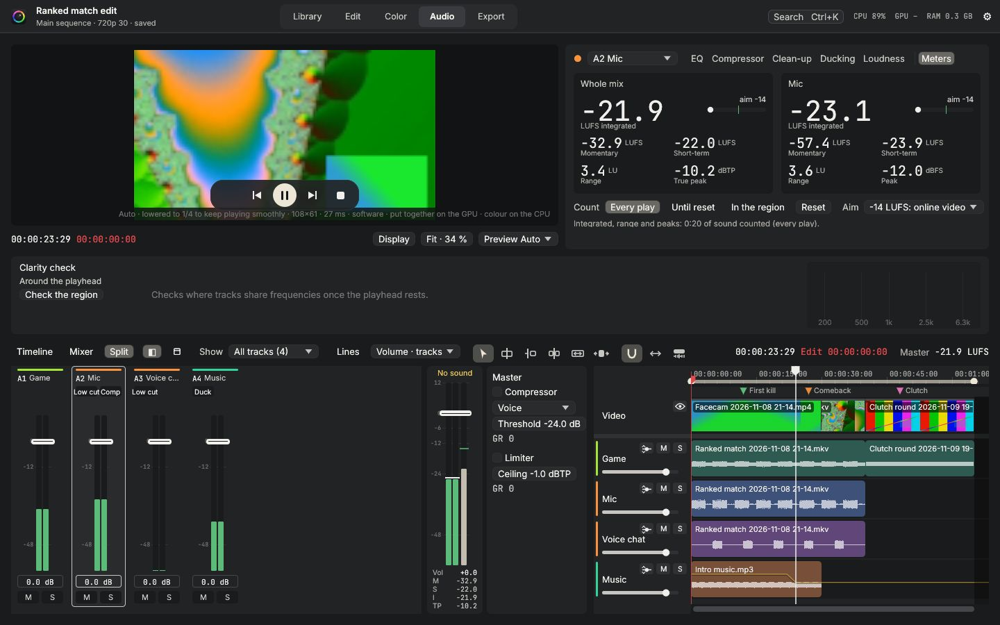
The Meters tab shows, for the whole mix and the chosen track: integrated loudness (large, against the aim), momentary, short-term, loudness range and peak (true peak for the mix). Choose how integrated loudness and peaks are counted:
- Every play: they start again each time you play (as on the Edit page).
- Until reset: they add up over every play until you click Reset.
- In the region: only what plays inside the region counts.
The master column (right of the timeline on the Edit page, and the master strip in the mixer) has the mix's meter, which is also its fader, a loudness lane with a line at the aim, and M, S, I and TP under it: momentary, short-term, integrated loudness and the highest true peak. I turns green within 1 LU of the aim. Click I or TP to start them again.
The loudness to aim for is one setting: right-click the master column, or Settings › Audio. −14 LUFS suits online video; −16, −23 and −24 LUFS (broadcast) or none are offered too.
The mixer#
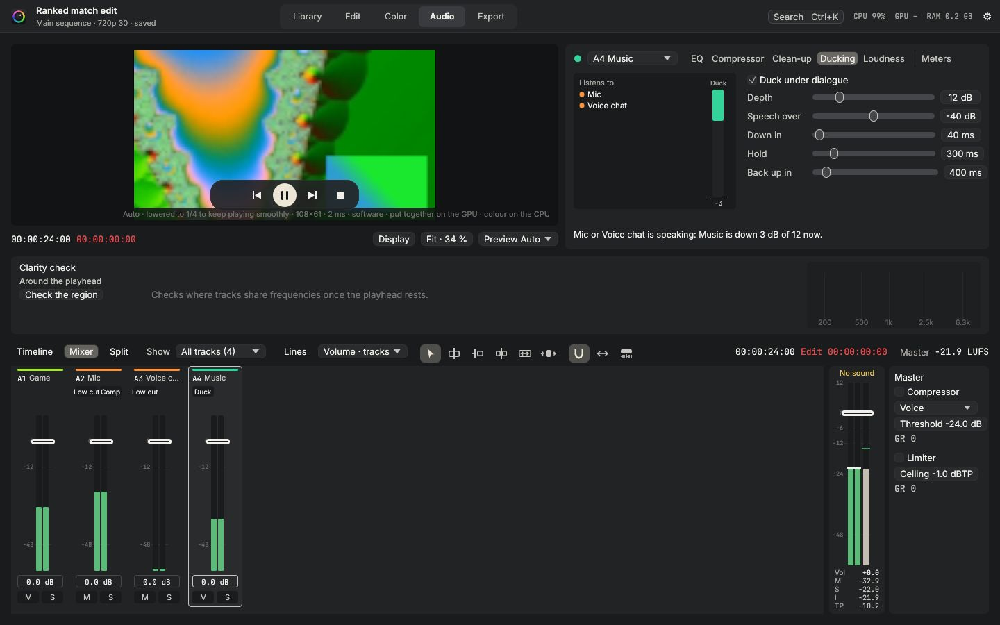
Switch the bottom of the page to Mixer or Split. Each track has a strip:
- A meter that is also the fader: drag it, or type the exact volume in dB. Double-click for 0 dB.
- Tags for the effects that are on; click one to open that tool.
- M (mute), S (solo) and the role.
The strips scroll sideways; the Master stays on the right with its own compressor and a true-peak Limiter (its ceiling keeps peaks under the level you set, −1 dBTP for online video). The limiter is off until you turn it on.
Volume and pan lines#
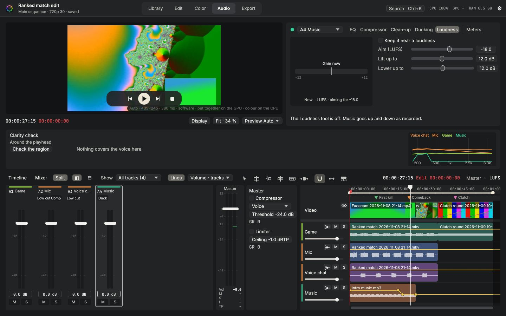
- Press A (or click Lines in the bar). “Lines on ×” shows in the tool row; Esc or a click on it leaves.
- Choose Volume or Pan, and whether to draw on tracks or on clips.
- Click on the line to add a point; drag a point to move it. Double-click or right-click a point to remove it.
A track's line stays at its place on the timeline; a clip's line stays on the same moment of its recording, so it moves with the clip. Lines work on every page with a timeline, and each change is one undo step.
Clarity check: can you hear the voice?#
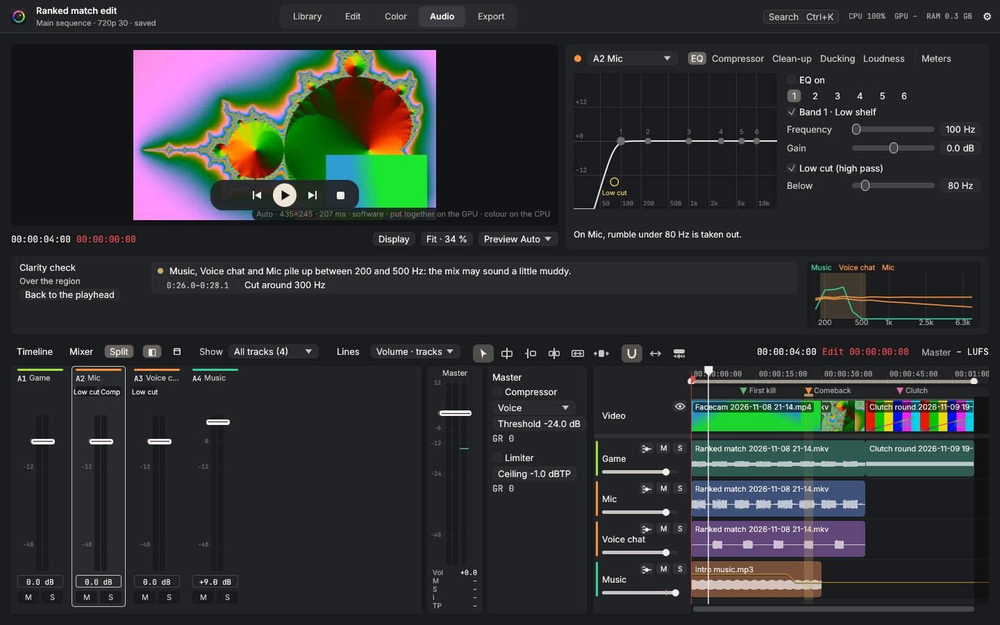
The clarity check listens to the mix the way it will be heard (effects included) and finds where something covers the voice, or where several tracks pile up into mud between 200 and 500 Hz. It never changes the sound by itself.
- When you stop playing and the playhead rests, it checks a second either side of the playhead. Click Check the region to check the whole region (Back to the playhead returns).
- Findings are listed worst first, each with a sentence, where it is (click to go there) and fix buttons. They are also marked on the timeline as coloured stretches over the tracks involved.
- The fixes are ordinary, undoable changes to one track: Lower under dialogue (ducking), Cut around 300 Hz (less mud) and Make room for the voice (a dip at 2.5 kHz). After a fix it checks again and says how bad it was and is now (“How bad: 72 % → 61 %”). A fix already made says so (“Cut applied, −3.5 dB · Cut deeper”).
- “Nothing covers the voice here.” means all is well.
Only tracks with the Dialogue role count as the voice, so set roles first.
Spectrum, Loudness, Tracks and Stereo#
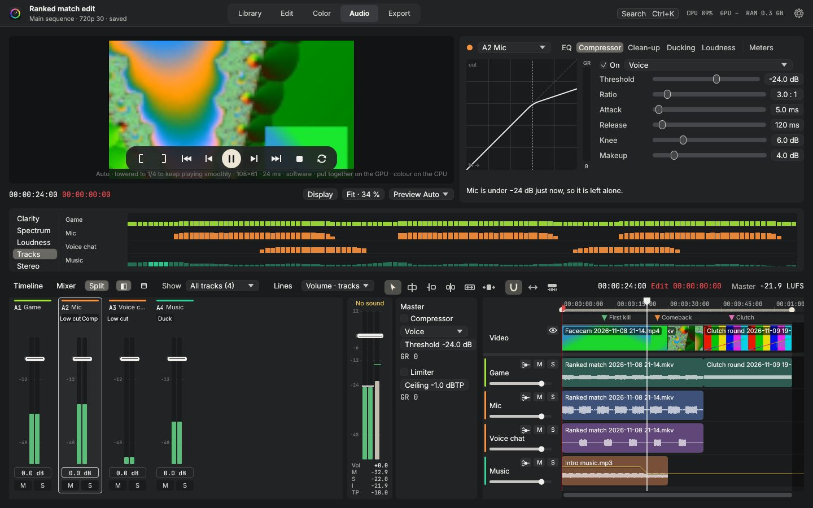
The column at the left of the middle band switches it from Clarity to a live picture of what is playing. The app remembers your choice for every project. The pictures fill in while you play and keep the last few seconds when you stop.
- Spectrum: the sound by frequency now (lows left, highs right), with a faint line holding the highest levels for a moment. Beside it, the last few seconds as a spectrogram: time runs left to right, frequency goes up, and brighter is louder. Mix shows the whole mix as it goes out; the track's name shows the track chosen above, after its EQ. While the EQ tool is open, the analyser listens to the EQ's track.
- Loudness: the mix's loudness over the last 30 seconds. The thick line is short-term (3 seconds), the thin one momentary, and the dashed green line is the loudness you aim for (the same setting as the master column's). Red ticks along the top mark true peaks over −1 dBTP. Beside it, the short-term loudness now, large.
- Tracks: a lane per track, in its role's colour, showing how loud it was over the last 15 seconds. You can see who speaks when, and what plays under them. A track while ducking turns it down is drawn fainter. The Show filter narrows the lanes too.
- Stereo: left against right as a cloud of points. Straight up and down is mono, a wide cloud is wide stereo, and a flat line means the channels are opposite and cancel on one speaker. Phase shows how alike the channels are (+1 the same, −1 opposite) and Balance which side is louder, with a sentence on what it means, such as “Stereo, and safe on one speaker.” Phase turns red when parts would cancel on a phone.
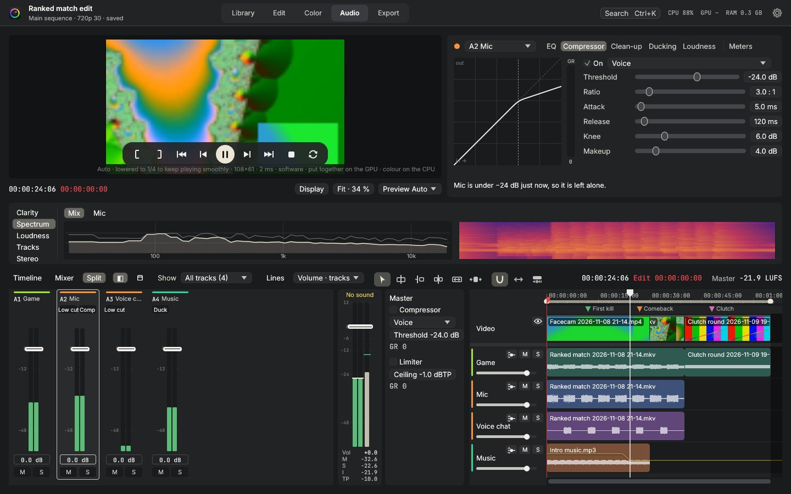
Export page#
The Export page turns the timeline into a file: pick a preset, check the summary, click Export. Exports run in the background while you keep editing.
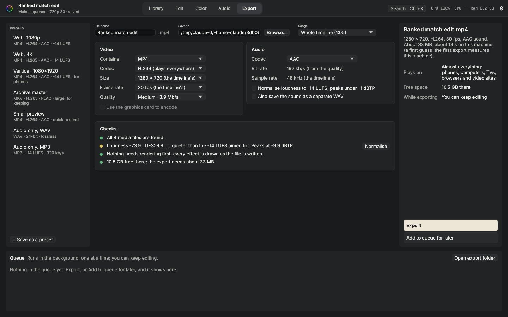
Presets#
| Preset | What you get |
|---|---|
| Web, 1080p | MP4, H.264, High quality, loudness normalised. For video sites. |
| Web, 4K | MP4 in H.265 (or H.264 where this computer can't encode H.265), High, normalised. |
| Vertical, 1080×1920 | For phones. A wide timeline gets plain black bars above and below; a vertical timeline fills it. |
| Archive master | MKV, H.265 (or H.264) with lossless FLAC sound, High, the timeline's size, as mixed. Large, for keeping. |
| Small preview | MP4, 720p, Small: quick to send for feedback. |
| Audio only, WAV | 24-bit lossless sound. |
| Audio only, MP3 | 320 kb/s, normalised. |
A preset is lit while the settings are its own. Change anything and click + Save as a preset to keep your own; right-click one of yours to remove it. Your presets are offered in every project.
“1080p” means 1080 lines on the shorter side with the timeline's shape kept, so a 21:9 timeline stays 21:9.
Settings#
- File name and folder (Browse…).
- Range: the whole timeline, the region (in to out), or a labelled stretch (a region you labelled with Shift+M), by its name.
- Video: container (MP4 or MKV), codec (H.264, H.265, AV1; what this computer can't encode is greyed), size (the timeline's, 4K, 1440p, 1080p, 720p, 480p, vertical, wide, square), frame rate (the timeline's or a standard one below it), quality (High, Medium, Small, with the bit rate it means) and whether the graphics card's encoder is used.
- Audio: codec (AAC, Opus, FLAC in MKV), bit rate, sample rate, Normalise to the loudness you aim for, and Also save the sound as a separate WAV.
Normalise first measures the whole stretch as it will be mixed, then exports with the gain that brings it to your aim (Settings › Audio, −14 LUFS for online video), and puts a true-peak limiter at −1 dBTP on the mix. When it's done, it tells you the loudness and peak of what was written. Without Normalise, the mix is written exactly as you hear it.
Other shapes: exporting at another shape than the timeline's fits the whole picture inside with plain black bars, never cut off or stretched.
Audio only: choose WAV, MP3 or OGG (Opus or Vorbis) as the container; there is then no Video panel and no graphics card is needed.
Checks#
Under the settings, Kiria checks before you export and says what it found in plain words, with a one-click fix where there is one:
- Media the timeline plays that can't be found (Find them…). This one blocks the export.
- Loudness more than 2 LU from your aim, or peaks over −1 dBTP (Normalise).
- A format this computer can't encode (Use H.264).
- Black bars, or a picture made larger than the timeline (Use the timeline's size).
- A name with characters that can't be in a file name (Replace them), a file that will be replaced (Use a new name), a folder that isn't there (Make it), and too little free space (Choose another folder).
Summary and queue#
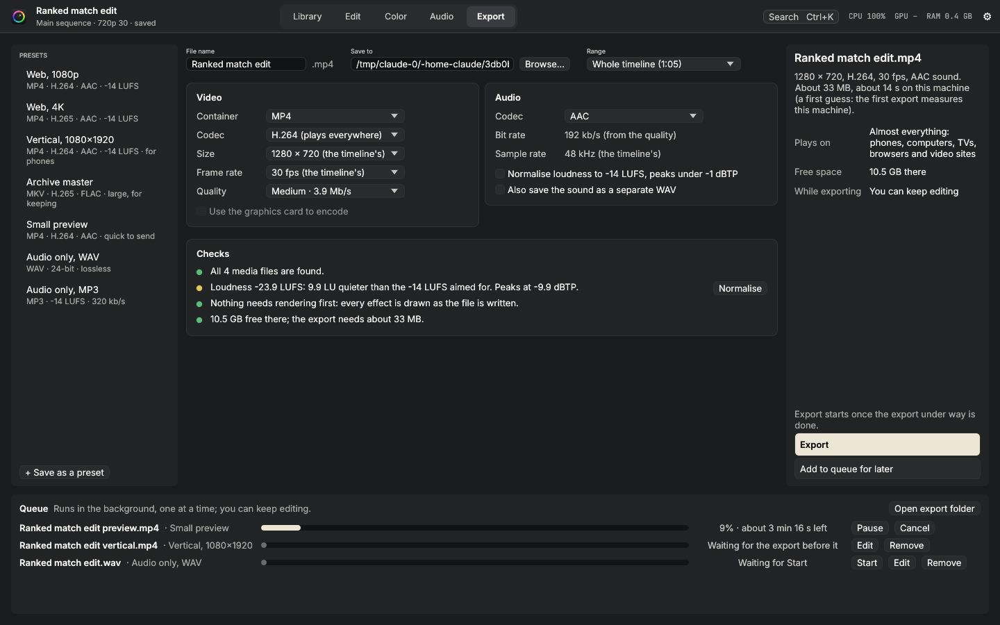
The summary on the right says what you will get in a sentence (“1920 × 1080, H.264, 60 fps, AAC sound. About 240 MB, about 1 min 40 s on this machine.”), what it plays on and the free space. The time is a first guess until you have exported once on this computer; after that it learns how fast your machine is.
- Export starts it (or puts it in line). Add to queue keeps it waiting until you click Start.
- Each export is the timeline as it was when you added it, so you can keep editing.
- In the queue: progress and time left, Pause and Resume, Cancel (nothing is left behind), Show (the file in its folder), Try again, Edit (its settings back on the page) and Remove.
- Closing the window while exports are unfinished asks first: Keep exporting or Stop and close.
Exports always use the original recordings at full quality (never proxies), and they match the viewer frame for frame and the playback sample for sample.
Editing techniques#
The cuts and tricks editors use again and again, what each is for, and how to make it in Kiria. Try them on your own recordings: every step is one undo away.
J cuts and L cuts#
In a plain cut, picture and sound change at the same moment. In a J cut the next shot's sound starts first: you hear the boss fight a moment before you see it, which pulls the viewer forward. In an L cut the last shot's sound carries on under the next picture: your reaction keeps going while the replay starts. On the timeline the sound's cut sits before or after the picture's, which is where the names come from (the shapes of the letters).
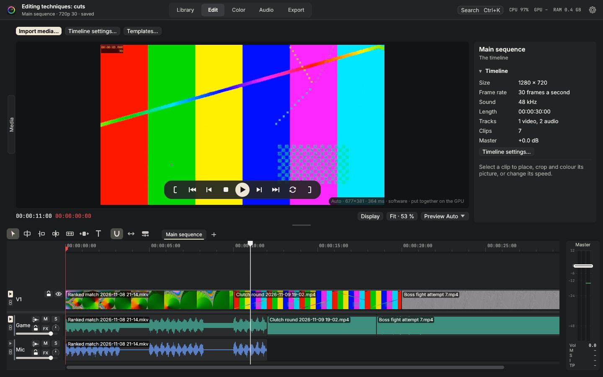
- Cut the two shots so they meet (Split with S).
- Select both, right-click one and choose Unlink, so their pictures and sounds move on their own.
- Pick the Roll tool (T) and drag the cut on the sound track (Game, and Mic too if you have one): to the left for a J cut, to the right for an L cut. The picture's cut stays where it is.
- Press V to go back to the Select tool. A short crossfade on the sound's cut makes the change smoother.
Jump cuts: cutting out the pauses#
Cutting the pauses and "umm"s out of a talking shot keeps it quick. The picture jumps a little at each cut, which viewers of commentary and vlogs are used to.
- By hand: put the edit needle where the pause starts and press S, again where it ends, then select the piece and press Backspace. Everything after closes up, on every track.
- All at once: Remove silence (Ctrl+Shift+R) finds the quiet stretches on the mic track, shows the cuts first, and makes them as one undo step.
- To hide a jump, cut to something else for a moment (a cutaway), or punch in (next).
Punch-ins#
A punch-in jumps closer on the same shot, for a punchline or a reaction. It also hides a jump cut.
- Split where the punch-in starts (S), and again where it ends if it should jump back out.
- Select the middle part and set Size to 120–150 % in the inspector's Transform. Drag the picture in the viewer to frame the face or the action.
- For a slow push in instead of a jump, add Zoom to a point from the media drawer's Effects (Motion) and raise Keep it sharp so the close-up stays crisp.
Cutting on action#
Cut in the middle of a movement (a jump, a turn, a reload), and continue the same movement in the next shot. The eye follows the movement and hardly notices the cut. Step through the moment a frame at a time with ← and →, split where the movement is half done in each shot, and use the Roll tool (T) to nudge the cut a frame or two until it flows.
Match cuts and smash cuts#
- A match cut joins two shots that look or move alike: a crosshair to a round sun, a door closing to a level loading. Line the shapes up in the viewer with the inspector's Position and Size, and turn on Split view (in the viewer's Display menu) to compare the clip with the timeline's picture.
- A smash cut goes straight from calm to loud with no warning: a quiet lobby to the explosion. Keep it a hard cut, with no fade on either side. For an extra hit, put a short Impact frame or Shake (Effects) on the first frames of the loud shot.
Crossfades and sound bridges#
A hard cut in sound can click or jar even when the picture cut is clean. A short crossfade on the sound smooths it without anyone noticing. Music that carries on across picture cuts (a sound bridge) ties a run of shots together into one moment.
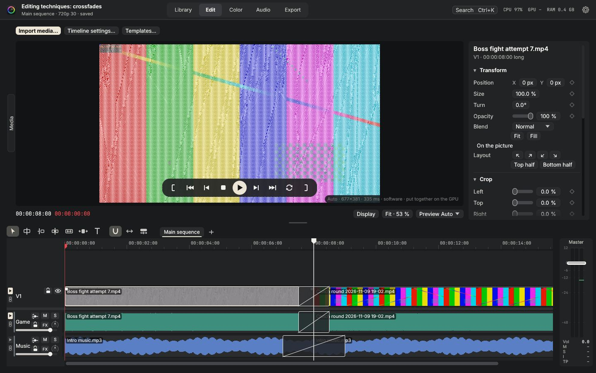
- Drag Crossfade from the media drawer's Effects (Sound crossfades) onto a cut on an audio track. A third of a second is often enough for game sound; music likes one or two seconds of Smooth crossfade.
- To shorten music, cut it at two places on the beat, remove the middle, and crossfade the join: the song seems to skip naturally.
- Keep the music on its own track running across your picture cuts, and turn on Ducking on it so it dips under your voice.
- A Cross dissolve on the picture with a Crossfade on its sound makes a soft change of time or place.
Cutaways and B-roll#
A cutaway shows something else while the sound goes on: the scoreboard while you explain the round, the map while you plan. Put the other shot on a video track above (V2) where it should be seen, and leave the sound below it as it is. The picture on top covers the one below for that moment; your voice carries on. For a smaller window instead, use the inspector's one-click layouts (a corner, or the top or bottom half): the facecam layouts.
Speed ramps#
A speed ramp slows a shot down for the moment that matters and speeds back up after: the headshot in slow motion, the rest at full speed. Put the playhead on that moment and click Slow moment in the inspector's Speed section (down, a second slow, back up), or Ease into slow motion to stay slow; for your own shape, add speed keyframes with the Speed row's diamond. Recordings at 120 fps or more slow down most smoothly. Add Motion blur (Effects, Motion) if fast parts look choppy.
Cutting to the beat#
For a montage, cuts that land on the music's beats feel deliberate. Play the music and press M on each beat you want to cut on: each press puts a timeline label at the needle. With snapping on (N), clip edges and the edit needle snap to those labels, so trim each shot to end on one. Cutting on every beat soon feels busy: every second or fourth beat usually works better.
Settings#
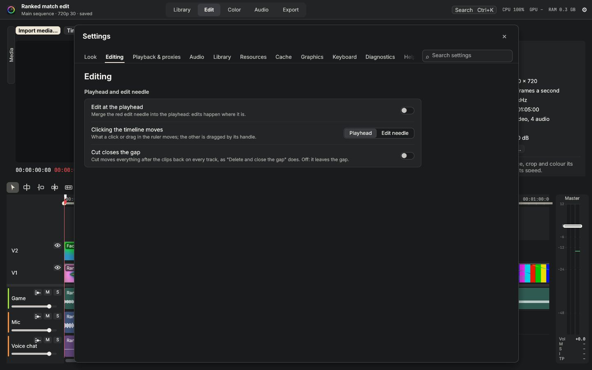
Open Settings with the cog in the top bar or Ctrl+,. The tabs run across the top; type in the search box at their right end to find a setting by any word (“proxy”, “dark”, “lufs”). Search with Ctrl+K also opens Settings right at the row you need. A Restart badge on a row means the change applies the next time Kiria starts. Settings are yours: the same in every project.
The editor's tabs#
| Tab | What you set there |
|---|---|
| Look | Theme: Ash (soft graphite with a bone accent, the usual) or Carbon (warm near-black with a copper accent). The launcher follows it. |
| Editing | Edit at the playhead; Clicking the timeline moves the playhead or the edit needle; Cut closes the gap; Always unlink audio and video (every picture and sound stream on its own); Detailed gain control on the selected audio clip (the selected clip's track opens up to the large volume knob, and closes again when nothing on it is selected); Clip pictures: Quick (the usual: in long recordings each picture inside a clip is the nearest key frame, up to a second or two off, and many times quicker to read) or Exact (the exact frame, slower); Waveform shape, Waveform colours, Waveform side and Waveforms fitted to each recording (see How sound looks in clips). |
| Playback & proxies | Proxies: Off, On or Auto. Jumping in a file without a proxy: show the nearest key frame at once and then the exact frame (the usual), or wait for the exact frame. Memory for playback: graphics memory for frames decoded ahead of the playhead (up to 10 seconds) and kept behind it; Auto takes a quarter of the card's memory, up to 8 GB. |
| Audio | Loudness to aim for: −14 LUFS (online video), −16, −23, −24, or none. Used by the meters, the Library's levels and export's Normalise. A column for every audio track: every audio track gets its tall fader and meter beside the Master column on the Edit page, without pinning each (handy on a wide screen); the × on one takes it off. Microphone, Recording channel (Left, Right or Both mixed) and Count-in (Off, 1, 3 or 5 seconds): how a voice-over is recorded. |
| Library | Keep in and out marks for this session only, or saved in the project. |
| Resources | Worker threads, Memory for frames (each Auto or a number, with what is in use now; frames that no longer fit in the graphics card's memory for playback are kept here) and Background work: pause it while playing (the usual), always, or only when idle. |
| Cache | Disk space for proxies, how much is In use (this project and all), and clearing: This project's proxies (only those no other project uses, or the shared ones too) and Every proxy. Each asks first; recordings and project files are never touched. Waveforms, clip pictures and loudness › Clear removes the waveforms, the small pictures inside video clips and the Library's loudness readings that Kiria keeps so recordings are not read again each time; they are read again when needed. Clearing proxies leaves them. Pre-rendered frames › Clear removes the frames of every region pre-rendered, in every project (they take at most 20 GB, those used longest ago going first). |
| Graphics | Draw the windows with: Automatic (Vulkan, and Direct3D 12 if Vulkan doesn't start), Vulkan or Direct3D 12 (Windows); Decode video on the window's graphics device (fastest; turn it off if video shows wrong colours, stutters or stops the app). Shared with the launcher. |
| Keyboard | Keyboard shortcuts: opens the shortcuts page. |
| Diagnostics | Diagnostics (every problem of this session and what this computer is using) and the Log folder (Copy path). |
| Help | User guide: Open shows this guide in your web browser. |
The launcher's tabs#
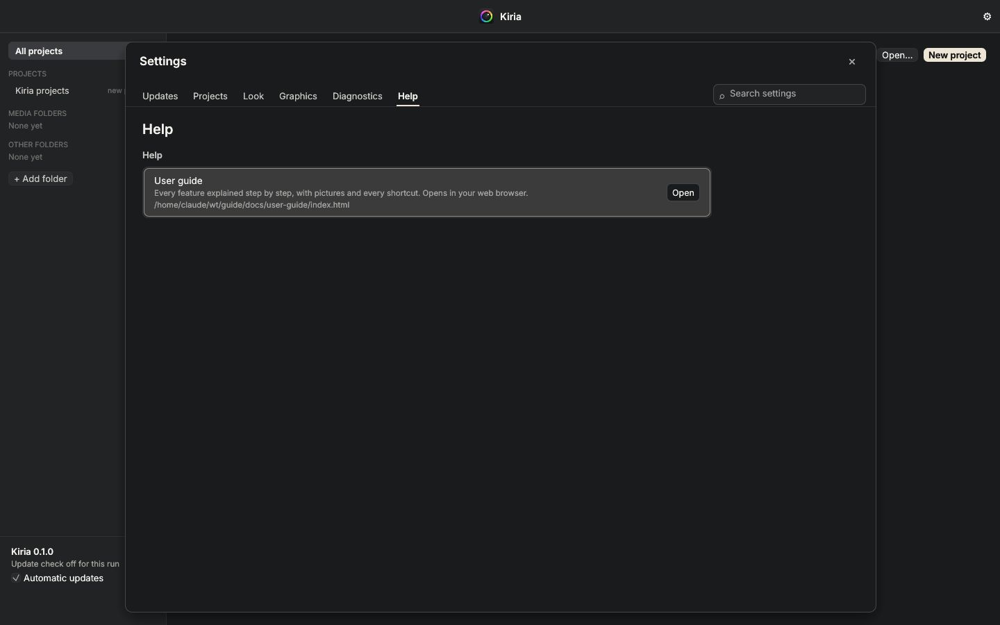
| Tab | What you set there |
|---|---|
| Updates | The Version installed and whether a newer one is out; Versions to get (Stable releases, or Betas too); Automatic updates. |
| Projects | Save new projects in (Change…). |
| Look | The theme, which follows the editor's. |
| Graphics | The same card as in the editor. |
| Diagnostics | Diagnostics and the launcher's log folder. |
| Help | The User guide. |
Keyboard shortcuts page#
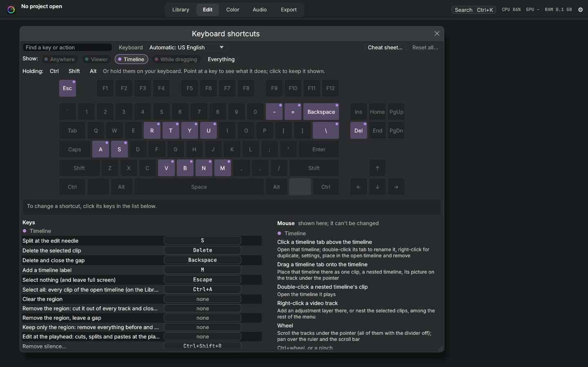
Open it with Ctrl+/, from Settings › Keyboard, or by searching for “shortcuts”, “keybinds”, “hotkeys” or “keys”.
- The keyboard is drawn in your keyboard's shape (US, UK, Norwegian, Japanese, Russian and Arabic are built in) with its own characters. Used keys are tinted with a dot in their context's colour; unused keys are dimmed.
- Ctrl, Shift and Alt toggles redraw it for those combinations.
- Point at a key to see what it does; click it to pin it.
- Context chips (Anywhere, Viewer, Timeline, While dragging) filter the keyboard, the list and the mouse section. The search box narrows the list and lights up the keys it finds.
- The Mouse section lists what wheel, drag, click and held keys do, by context.
Changing a shortcut#
- Click a command's keys in the list (or pin a key and choose Change…).
- Press the new keys, or click them on the drawing.
- If another command already has those keys, the page says which one and offers Swap or Cancel. No two commands ever share a combination.
A command can be left without a shortcut, and commands that have none (such as New timeline or Sync by sound) can be given one. Reset puts one command back; Reset all puts every key back. Your changes take effect at once in menus, tooltips and search, and the launcher uses them too.
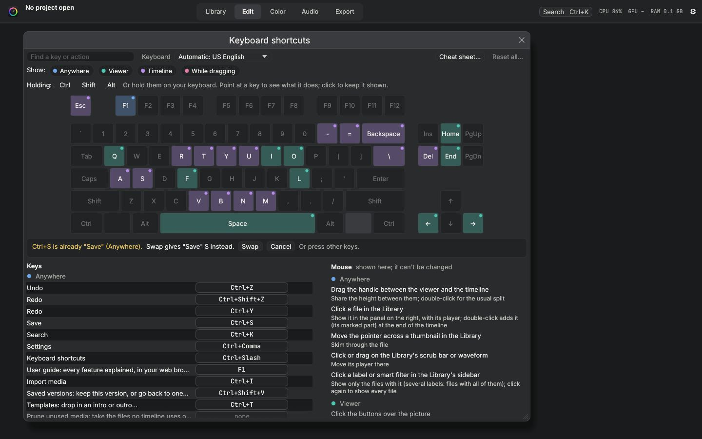
Keyboard layouts#
Shortcuts belong to a key's place on the keyboard, not to the character printed on it, so S splits from the same spot on every layout. The page follows the layout your system uses, also when you switch layouts while Kiria runs (“Automatic: Norwegian”). Pick another layout in the dropdown to override it. Menus and tooltips write keys with your keyboard's characters; the page adds the US name when they differ (“Ctrl+- (Slash on a US keyboard)”). On a Russian or Arabic keyboard each key shows its own letter and the Latin one beside it, and shortcuts are written with the Latin letters (“Ctrl+C”), as those keyboards print them.
Printable cheat sheet#
Click Cheat sheet… and choose where to save it. You get one page to print: a keyboard picture for each combination of Ctrl, Shift and Alt in use, every command by context with your current keys, and the mouse.
Saving and recovery#
You don't need to save. Every change is written down the moment you make it, and a crash, a forced quit or a power cut never loses work.
How saving works#
- Every change, undo and redo goes into the project's journal at once (a file beside the project ending in
.journal). - When you pause, the whole project is saved by itself in the background. Ctrl+S saves it now. The top bar says “saving soon”, “saving…” or “saved”.
- Files are written whole or not at all: a save interrupted half way never leaves a broken project.
After a crash#
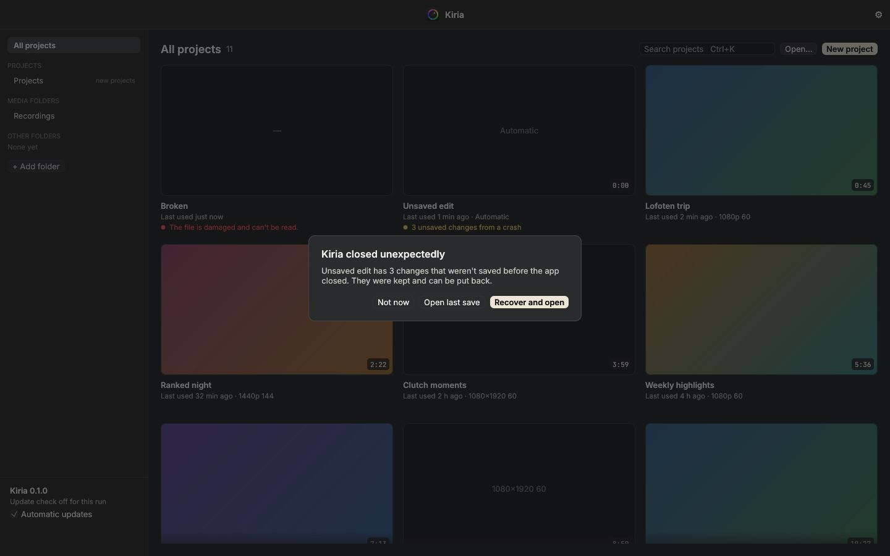
If the editor didn't close properly, the launcher says so the next time it starts:
- Recover and open: the project opens with every change back, and the editor says how many came back. Each can still be undone, one by one. The editor also offers Open last save there, in one step that undo takes back.
- Open last save: opens the project as last saved. The unsaved work is kept beside the project in a file of its own (ending in
.journal.discarded-and the date), never thrown away. - Not now: decide later; the project's card says it has unsaved work, and opening it asks again.
If nothing was unsaved, the launcher only says that nothing was lost. Several editors can be open at once, one per project; each knows only about its own crashes.
Saved versions#
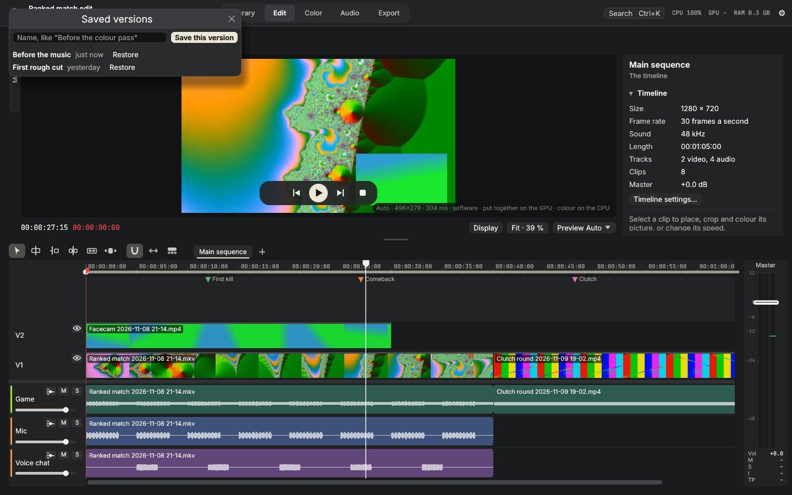
Press Ctrl+Shift+V. Type a name (“Before the music”) and click Save this version. Later, pick one and click Restore: the project goes back to it as one step, so Ctrl+Z returns to where you were. Versions are kept in a folder beside the project (ending in .versions), one file per version.
A project's files#
A project is its .kiria file plus a few files beside it with the same name: the journal (and the copy it starts from), the picture the launcher shows (.thumbnail.png), the timeline layout (.view), saved versions (.versions) and backups. Renaming, moving and deleting a project in the launcher take all of them along. Your recordings are never stored in the project; it points at them.
- Older projects: a project made by an older version is upgraded when opened, and a copy of the original is kept first (ending in
.backup-vand the old format's number). - Newer projects: a project saved by a newer version of Kiria opens read-only, with an explanation, so it is never damaged. Update Kiria to edit it.
Diagnostics and logs#
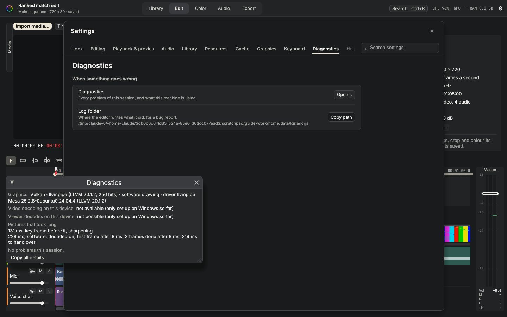
- Diagnostics (Settings › Diagnostics › Open…) lists every problem of this session with its explanation, and facts about your computer: the graphics system and card in use, which kinds of video the card decodes, pictures that took long to show, and how the last play went (frames drawn and pictures shown a second, and its hitches). While the timeline plays, each hitch (a stop of 50 ms or more) is written to the log with where the time went: working out the frame, drawing it on screen, or decoding the picture. Copy all details copies it all, for a report.
- Logs: both programs write what they did to a log in the app's data folder, one file a day, kept for 7 days. Settings › Diagnostics shows the folder and has Copy path.
- Crash reports: if the app ever crashes, a report (what happened, versions, graphics card, the end of the log) is written to the
crash-reportsfolder beside the logs. Attach it to a bug report.
| Windows | Linux | |
|---|---|---|
| Data folder | %LOCALAPPDATA%\Kiria | ~/.local/share/Kiria |
| Logs | …\Kiria\logs | …/Kiria/logs |
| Crash reports | …\Kiria\crash-reports | …/Kiria/crash-reports |
| Proxies | …\Kiria\cache | ~/.cache/Kiria |
Templates, the labels you offer everywhere, your export presets and your settings are small files in the data folder too.
Troubleshooting#
Every problem in Kiria comes with what happened, why, and a fix, often with a button. If that doesn't help, here are the common cases.
No sound#
- If the master column and status line say No sound output: meters still work, Kiria found no sound device. Playback still runs at the right pace and every meter works; you just don't hear it. Plug in or turn on your headphones or speakers, pick a default output in the system's sound settings, and open the project again.
- Check the track isn't muted (M), another track isn't soloed (S), and the clip's and track's volume aren't at the bottom.
- Kiria plays in stereo, like other programs. A 7.1 recording is mixed down to two channels for playback.
The window doesn't open or looks wrong#
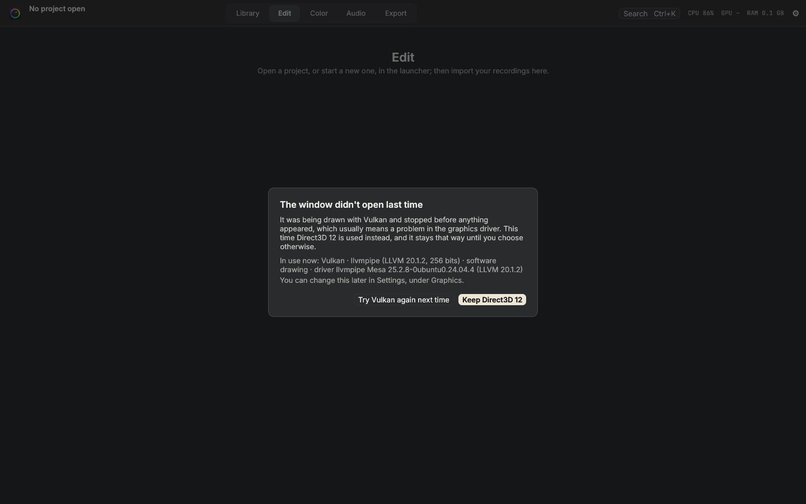
- On Windows, Kiria draws with Vulkan and falls back to Direct3D 12. If a start with Vulkan crashed or froze, the next start uses Direct3D 12 and asks The window didn't open last time: Keep Direct3D 12 or Try Vulkan again next time. You can change it later in Settings › Graphics.
- Updating your graphics card's driver fixes most drawing problems.
Video shows wrong colours, stutters or stops the app#
- If video decoding on the graphics card stopped the app, the next start asks The app stopped while showing video last time: Keep it off or Try it again next time.
- To turn it off yourself: Settings › Graphics › Decode video on the window's graphics device. Video is then decoded another way; it is slower but works everywhere.
- For heavy recordings (high resolution, high frame rate, H.265 or AV1), let proxies do the work, and set the preview quality to Auto or 1/2.
- A file Kiria can't read is refused at import with the reason. A recording whose end is missing can still be imported up to where it stops.
Files can't be found#
If you moved recordings, Kiria looks for them by itself when the project opens. For the rest, click Find them… in the banner on the Edit page and pick the folder they are in now; renamed files are found too. Adding the folder to the launcher's folders helps next time. See Missing files and relinking.
Playback is slow or the computer is busy#
- Leave Settings › Playback & proxies › Proxies on Auto, or set it to On.
- If the picture stalls for a moment where the whole picture changes at once (a flash, a cut, night vision in a game), give Settings › Playback & proxies › Memory for playback more: the viewer decodes ahead of the playhead into it while playing and while paused, and a heavy stretch shorter than what was read ahead plays without a stall. Last playback in Diagnostics says how far ahead it had read.
- Leave Settings › Resources › Background work on “Pause to play”, so proxies and analysis wait while you play.
- Close other heavy programs, and check the top bar's processor, graphics and memory readout.
No file chooser opens (Linux)#
Kiria uses your desktop's file chooser. Without one, it explains that instead of doing nothing. Install your desktop's portal service (or zenity), or drop files on the window instead.
Reporting a problem#
Open an issue on the project's GitHub page. Say what you did and what happened, and attach the log of that day (Settings › Diagnostics › Log folder) and any crash report. Copy the Diagnostics window's details too.
Every shortcut#
These are the usual keys; the shortcuts page shows the ones you use now, and changes them. Keys are named as on a US keyboard. This table is made from the app's own shortcut table, so it is always complete.
Anywhere
| Command | Keys |
|---|---|
| Undo | Ctrl+Z |
| Redo | Ctrl+Shift+Z or Ctrl+Y |
| Save | Ctrl+S |
| Search | Ctrl+K |
| Settings | Ctrl+, |
| Keyboard shortcuts | Ctrl+/ |
| User guide: every feature explained, in your web browser | F1 |
| Import media | Ctrl+I |
| Saved versions: keep this version, or go back to one… | Ctrl+Shift+V |
| Templates: drop in an intro or outro… | Ctrl+T |
| Prune unused media: take the files no timeline uses out of the project… | none (give it one on the shortcuts page) |
| Build proxies: a proxy for every video file of the project that has none, also those cleared from the cache | none (give it one on the shortcuts page) |
| Build proxies at full speed: every video file that has none, with as much of this machine as it takes, also while playing | none (give it one on the shortcuts page) |
| Package project: copy it and the media it uses into one folder, to open on another machine… | none (give it one on the shortcuts page) |
| Save as a template: the region, or the whole timeline… | Ctrl+Shift+S |
| Copy: the selected clips, or the chosen keyframe marks | Ctrl+C |
| Cut: copy the selected clips and take them out | Ctrl+X |
| Paste: copied clips at the edit point, or copied keyframes on the selected clip | Ctrl+V |
Viewer
| Command | Keys |
|---|---|
| Play / pause | Space |
| Stop: back to where playback started | Ctrl+Space |
| Back one frame | ← |
| Forward one frame | → |
| Go to the start | Home |
| Go to the end | End |
| Back to the selected clip's previous keyframe | Alt+← |
| On to the selected clip's next keyframe | Alt+→ |
| Back to the previous cut between pictures (on the Color page, the clip before, selected) | ↑ |
| On to the next cut between pictures (on the Color page, the next clip, selected) | ↓ |
| Loop playback inside the region | L |
| Mark in: where the region begins (Edit page), or where the part of a file to add begins (Library) | I |
| Mark out: where the region ends (Edit page), or where the part of a file to add ends (Library) | O |
| Viewer full screen, and back | F |
| Move, resize, crop and turn the selected clip on the picture: handles on or off | Q |
| Split view: the selected clip's own picture beside the timeline's | none (give it one on the shortcuts page) |
| Nothing over the picture: the play buttons go under it, the handles and notes away; and back | H |
| Viewer in its own window, for another screen or monitor | none (give it one on the shortcuts page) |
| Save this frame as a picture… | Ctrl+Shift+E |
| Fit the picture in the viewer | Shift+Z |
| Picture at 100 %: one pixel of the timeline on one of the screen | Ctrl+0 |
| Zoom in on the picture | Ctrl+= or Ctrl+Shift+= |
| Zoom out of the picture | Ctrl+- |
Timeline
| Command | Keys |
|---|---|
| Split at the edit needle | S |
| Delete the selected clip | Delete |
| Delete and close the gap | Backspace |
| Add a timeline label | M |
| Label the region: one label over all of it | Shift+M |
| Select nothing (and leave full screen) | Esc |
| Select all: every clip of the open timeline (on the Library page, every file shown) | Ctrl+A |
| Clear the region | none (give it one on the shortcuts page) |
| Remove the region: cut it out of every track and close the gap | none (give it one on the shortcuts page) |
| Remove the region, leave a gap | none (give it one on the shortcuts page) |
| Keep only the region: remove everything before and after it | none (give it one on the shortcuts page) |
| Pre-render the region: put its frames together ahead of time, so it plays smoothly | none (give it one on the shortcuts page) |
| Edit at the playhead: cuts, splits and pastes at the playhead, no separate edit needle | none (give it one on the shortcuts page) |
| Remove silence… | Ctrl+Shift+R |
| Record a voice-over from the playhead (on the audio target track), and stop | Shift+R |
| Select tool: pick, move and trim clips | V |
| Blade tool: cut clips where clicked | B |
| Ripple tool: trims move everything after | R |
| Roll tool: move the cut between two clips | T |
| Slip tool: show another part of a clip | Y |
| Slide tool: move a clip between its neighbours | U |
| Text tool: click the timeline to add a title there | W |
| Snapping on or off | N |
| Show the whole timeline | \ |
| Zoom in on the timeline | = or Shift+= |
| Zoom out of the timeline | - |
| Taller tracks (the area under the pointer, or all) | Alt+= |
| Shorter tracks (the area under the pointer, or all) | Alt+- |
| Tracks back to their usual height | Alt+\ |
| Timeline view: rough cut or full | Ctrl+Shift+T |
| Compact tracks: every track a thin strip, to see many at a glance | none (give it one on the shortcuts page) |
| Divider between video and audio tracks, or one list that scrolls together | none (give it one on the shortcuts page) |
| Volume knobs on the audio tracks: a knob beside each track's buttons instead of the slider under them | none (give it one on the shortcuts page) |
| Volume in the track headers: off, audio tracks are only their buttons and can be shorter (the volume is beside the master) | none (give it one on the shortcuts page) |
| Detailed audio gain: the large knob with its full scale on every audio track (taller tracks) | none (give it one on the shortcuts page) |
| Zoom to playhead: zooming the timeline keeps the playhead in place (out of view, brings it to the middle) instead of zooming at the pointer | none (give it one on the shortcuts page) |
| Clicking the timeline moves the edit needle (the playhead by its handle), or the playhead | none (give it one on the shortcuts page) |
| Add a video track (on top) | none (give it one on the shortcuts page) |
| Add an audio track (at the bottom) | none (give it one on the shortcuts page) |
| New timeline, the same size and rate as the open one | none (give it one on the shortcuts page) |
| Duplicate the open timeline | none (give it one on the shortcuts page) |
| Nest the selected clips: move them into a timeline of their own | none (give it one on the shortcuts page) |
| Sync by sound: line up the selected clips by what they hear… | none (give it one on the shortcuts page) |
| Add an adjustment layer at the playhead: its colour changes everything below it | none (give it one on the shortcuts page) |
| Volume and pan lines: draw them on audio tracks and clips, or work clips again | A |
Mouse
Anywhere
| With the mouse | What it does |
|---|---|
| Drag the handle between the viewer and the timeline | Share the height between them; double-click for the usual split |
| Click a file in the Library | Show it in the panel on the right, with its player; double-click adds it (its marked part) at the end of the timeline |
| Move the pointer across a thumbnail in the Library | Skim through the file |
| Click or drag on the Library's scrub bar or waveform | Move its player there |
| Click a label or smart filter in the Library's sidebar | Show only the files with it (several labels: files with all of them); click again to show every file |
Viewer
| With the mouse | What it does |
|---|---|
| Click the buttons over the picture | Play or pause, step one frame back or forward, stop |
| Drag the selected clip's picture | Move it in the frame, with handles on the picture switched on (Q); it snaps to the frame's centre and edges |
| Drag a corner of the selected clip's picture | Resize it, the opposite corner staying where it is (handles on) |
| Drag the bar on a side of the selected clip's picture | Crop that side, or give some back; the whole picture shows faintly while dragging, and the side snaps to the frame's edges and centre (handles on) |
| Drag the round handle above the selected clip's picture | Turn it about its middle; it lands on upright and quarter turns when near, Shift turns in steps of 15° (handles on) |
| Double-click the selected clip's picture | Fit it: as large as fits the frame, centred (handles on) |
| Click the diamond beside a value in the inspector | Add a keyframe for it at the playhead, or remove the one there; the arrows beside it move the playhead to its previous or next keyframe |
| Right-click a filled diamond in the inspector | Choose how the value goes on to the next keyframe: linear, hold or smooth |
| Ctrl+wheel over the picture | Zoom in or out at the pointer; zooming out stops at Fit on the way |
| Drag the picture with the middle button | Move around a zoomed-in picture |
| Double-click the picture in the viewer's own window | Fill that screen with it, or give the screen back |
Timeline
| With the mouse | What it does |
|---|---|
| Click a timeline tab above the timeline | Open that timeline; double-click its tab to rename it, right-click for duplicate, settings, place in the open timeline and remove |
| Drag a timeline tab onto the timeline | Place that timeline there as one clip, a nested timeline, its picture on the track under the pointer |
| Double-click a nested timeline's clip | Open the timeline it plays |
| Right-click a video track | Add an adjustment layer there, or nest the selected clips, among the rest of the menu |
| Wheel | Scroll the tracks under the pointer (all of them with the divider off); pan over the ruler and the scroll bar |
| Ctrl+wheel, or a pinch | Zoom in or out at the pointer |
| Shift+wheel, or a sideways wheel | Pan along the timeline |
| Alt+wheel | Taller or shorter tracks in the area under the pointer (not with compact tracks) |
| Drag with the middle button | Pan along the timeline and scroll the tracks |
| Click or drag in the ruler | Move the playhead; or the edit needle, when the Display menu says clicking the timeline moves it |
| Drag the playhead's handle at the top of the ruler | Move the playhead, whatever a click moves |
| Alt+click anywhere on the timeline | Move the playhead there, whatever a click moves and with any tool; a clip clicked stays as it was |
| Alt+drag in the ruler or on empty track space | Move the playhead along with the pointer, a frame at a time |
| Shift+drag in the ruler | Mark a region |
| Drag the red handle in the ruler | Move the edit needle |
| Click a label | Go to it; double-click to change it |
| Click a clip | Select it; with Shift or Ctrl, add it to the selection |
| Click an empty place | Select nothing |
| Click a diamond along the selected clip's bottom edge | Move the playhead to that keyframe; with Shift or Ctrl, choose it with others |
| Drag a keyframe diamond | Move its keyframes (and the other chosen ones) a frame at a time, snapping to the playhead and other diamonds (Alt: no snapping) |
| Drag along the selected clip's bottom edge, beside its diamonds | Draw a box: choose the diamonds inside it (with Shift or Ctrl, add them to those chosen), to copy, move or remove together |
| Right-click a keyframe diamond | Go there, remove its keyframes, or choose how they go on: linear, hold or smooth |
| Drag a clip, or its edge | Move it, or trim it (what a drag does follows the tool) |
| Drag a clip up or down | Move it to another track of its kind; its sound finds a free track |
| Drag a clip above the top video track, or under the bottom audio track | Make a new track there for it |
| Right-click | The menu for that clip or place |
| Right-click a track's name | Add a track; rename, hide or remove that one |
| Double-click a track's name | Type a new name for it |
| Click the eye by a video track's name | Hide the track from the picture, or show it again |
| Click the level button by an audio track's name | Show or hide a line across each of its clips at the clip's volume |
| Drag a clip's level line up or down | That clip's volume: +12 dB at the top, Off at the bottom; double-click it for 0 dB |
| Drag a file from the media drawer onto a track | Lay it there: its picture on the video track under the pointer, its sound where there is room |
| Drag the edge of a track's name | That track's height; double-click for the usual height (not with compact tracks) |
| Drag the line between video and audio | Share the timeline's height between them; the video area still grows for a track that is added (the Display menu can take the line away) |
| Drag a volume fader | That track's volume, or the mix's; double-click for 0 dB |
| Click I or TP under the master meter | Start the integrated loudness and the highest true peak again |
| Right-click the master column | Choose the loudness to aim for: -14 LUFS for online video, -16, -23, -24 or none |
While dragging
| With the mouse | What it does |
|---|---|
| Hold Alt while dragging a clip, its edge or a keyframe diamond | No snapping for this drag (a click with Alt moves the playhead instead) |
| Hold Alt while dragging a picture or its corner in the viewer | No snapping for this drag |
| Hold Alt while dragging a level line | Change the volume more finely |
| Hold Ctrl while dropping a file on the timeline | Insert it, pushing later clips along, instead of overwriting |